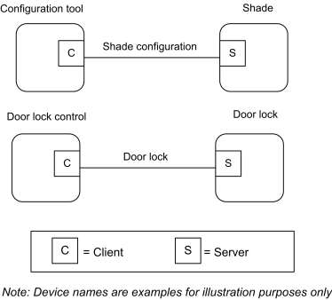

CHAPTER 7 CLOSURES ¶
The Cluster Library is made of individual chapters such as this one. See Document Control in the Cluster Library for a list of all chapters and documents. References between chapters are made using a X.Y notation where X is the chapter and Y is the sub-section within that chapter. References to external documents are contained in Chapter 1 and are made using [Rn] notation.
7.1 General Description ¶
7.1.1 Introduction ¶
The clusters specified in this document are for use typically in applications involving closures (e.g., shades, windows, doors), but MAY be used in any application domain.
7.1.2 Cluster List ¶
This section lists the clusters specified in this document, and gives examples of typical usage for the purpose of clarification.
The clusters defined in this document are listed in Table 7-1.
Table 7-1. Clusters Specified in the Closures Functional Domain ¶
| Cluster ID | Cluster Name | Description |
|---|---|---|
| 0x0100 | Shade Configuration | Attributes and commands for configuring a shade |
| 0x0101 | Door Lock | An interface to a generic way to secure a door |
| 0x0102 | Window Covering | Commands and attributes for controlling a window covering |
Figure 7-1. Typical Usage of the Closures Clusters ¶

7.2 Shade Configuration ¶
7.2.1 Overview ¶
Please see Chapter 2 for a general cluster overview defining cluster architecture, revision, classification, identification, etc.
This cluster provides an interface for reading information about a shade, and configuring its open and closed limits.
7.2.1.1 Revision History ¶
The global ClusterRevision attribute value SHALL be the highest revision number in the table below.
| Rev | Description |
|---|---|
| 1 | mandatory global ClusterRevision attribute added |
7.2.1.2 Classification ¶
| Hierarchy | Role | PICS Code | Primary Transaction |
|---|---|---|---|
| Base | Application | SHDCFG | Type 2 (server to client) |
7.2.1.3 Cluster Identifiers ¶
| Identifier | Name |
|---|---|
| 0x0100 | Shade Configuration |
7.2.2 Server ¶
7.2.2.1 Attributes ¶
For convenience, the attributes defined in this specification are arranged into sets of related attributes; each set can contain up to 16 attributes. Attribute identifiers are encoded such that the most significant three nibbles specify the attribute set and the least significant nibble specifies the attribute within the set. The currently defined attribute sets are listed in Table 7-2.
Table 7-2. Shade Configuration Attribute Sets ¶
| Attribute Set Identifier | Description |
|---|---|
| 0x000 | Shade information |
| 0x001 | Shade settings |
7.2.2.1.1 Shade Information Attribute Set ¶
The Shade Information attribute set contains the attributes summarized in Table 7-3.
Table 7-3. Attributes of the Shade Information Attribute Set ¶
| Id | Name | Type | Range | Access | Default | M/O |
|---|---|---|---|---|---|---|
| 0x0000 | PhysicalClosedLimit | uint16 | 0x0001 – 0xfffe | R | - | O |
| 0x0001 | MotorStepSize | uint8 | 0x00 – 0xfe | R | - | O |
| 0x0002 | Status | map8 | 0000 xxxx | RW | 0000 0000 | M |
7.2.2.1.1.1 PhysicalClosedLimit Attribute ¶
The PhysicalClosedLimit attribute indicates the most closed (numerically lowest) position that the shade can physically move to. This position is measured in terms of steps of the motor, taking the physical most open position of the shade as zero.
This attribute is for installation informational purposes only.
The value 0xffff indicates an invalid or unknown PhysicalClosedLimit.
7.2.2.1.1.2 MotorStepSize Attribute ¶
The MotorStepSize attribute indicates the angle the shade motor moves for one step, measured in 1/10ths of a degree.
This attribute is for installation informational purposes only.
The value 0xff indicates an invalid or unknown step size.
7.2.2.1.1.3 Status Attribute ¶
The Status attribute indicates the status of a number of shade functions, as shown in Table 7-4. Writing a value to this attribute only affects those bits with Read/Write access.
Table 7-4. Bit Values for the Status Attribute ¶
| Bit Number | Meaning | Access |
|---|---|---|
| 0 | Shade operational 0 = no 1 = yes | R |
| 1 | Shade adjusting 0 = no 1 = yes | R |
| 2 | Shade direction 0 = closing 1 = opening | R |
| 3 | Direction corresponding to forward direction of motor 0 = closing 1 = opening | RW |
7.2.2.1.2 Shade Settings Attribute Set ¶
The Shade Settings attribute set contains the attributes summarized in Table 7-5.
Table 7-5. Attributes of the Shade Settings Attribute Set ¶
| Id | Name | Type | Range | Access | Default | M/O |
|---|---|---|---|---|---|---|
| 0x0010 | ClosedLimit | uint16 | 0x0001 – 0xfffe | RW | 0x0001 | M |
| 0x0011 | Mode | enum8 | 0x00 – 0xfe | RW | 0x00 | M |
7.2.2.1.2.1 ClosedLimit Attribute ¶
The ClosedLimit attribute indicates the most closed position that the shade can move to. This position is measured in terms of steps of the motor, taking the physical most open position of the shade as zero. This attribute is set either by directly writing it, or by the following method.
When the Mode attribute is set to Configure, the shade is opening, and either the shade is stopped or it reaches its physical most open limit (if there is one – the motor MAY continue to turn at the top), the zero point for the motor-step measurement system is set to the current position of the shade.
When the Mode attribute is set to Configure, the shade is closing, and either the shade is stopped or it reaches its physical closed limit, the ClosedLimit attribute is set to the current position of the shade, relative to the zero point set as described above.
7.2.2.1.2.2 Mode Attribute ¶
The Mode attribute indicates the current operating mode of the shade, as shown in Table 7-6.The value 0xff indicates an invalid or unknown mode.
Table 7-6. Values of the Mode Attribute ¶
| Attribute Value | Meaning |
|---|---|
| 0x00 | Normal |
| 0x01 | Configure |
In configure mode, the ClosedLimit attribute MAY be set as described above.
7.2.2.2 Commands ¶
No cluster specific commands are generated or received by the server.
7.2.3 Client ¶
The client has no specific attributes and there are no cluster specific commands to receive or generate.
7.3 Door Lock ¶
7.3.1 Overview ¶
Please see Chapter 2 for a general cluster overview defining cluster architecture, revision, classification, identification, etc.
The door lock cluster provides an interface to a generic way to secure a door. The physical object that provides the locking functionality is abstracted from the cluster. The cluster has a small list of mandatory attributes and functions and a list of optional features.
7.3.1.1 Revision History ¶
The global ClusterRevision attribute value SHALL be the highest revision number in the table below.
| Rev | Description |
|---|---|
| 1 | mandatory global ClusterRevision attribute added; CCB 1811 1812 1821 |
| 2 | CCB 2430 |
| 3 | CCB 2629 2630 |
7.3.1.2 Classification ¶
| Hierarchy | Role | PICS Code | Primary Transaction |
|---|---|---|---|
| Base | Application | DRLK | Type 2 (server to client) |
7.3.1.3 Cluster Identifiers ¶
| Identifier | Name |
|---|---|
| 0x0101 | Door Lock |
7.3.2 Server ¶
Generally the door lock itself implements the server side of this cluster. The attributes and commands listed in this cluster were developed to be implemented by a door lock which has the ability to keep track of multiple users and schedules.
7.3.2.1 Alarms, Reports, and Events ¶
A door lock implementing all of the optional features provided in this cluster has the ability to push data to a controller in three different forms, Alarms, Reports and Events. Alarms are used to report critical states on the door lock. Reports are used to inform a subscribed device of changes of state in specific attributes on the lock. Events are used to inform a bound device about changes in state related to the operation and programming of the door lock. Event commands are sent to a binding. Examples of events are locking and unlocking the lock and adding or deleting a user on the lock.
7.3.2.1.1 Alarms ¶
The door lock cluster provides several alarms which can be sent when there is a critical state on the door lock. The alarms available for the door lock cluster are listed in the section below outlining the alarm mask attribute. The Alarm cluster is used to generate the actual alarms.
Alarm example: If the first bit of the attribute Alarm Mask is set, any device that is bound to the alarm cluster will be informed each time the deadbolt becomes jammed. If for some reason the door lock became jammed, the door lock would send an alarm command from the alarms cluster with the payload illustrated in
Figure 7-2. ¶
Figure 7-2. Format of the Alarm Cluster ¶
| Octets | 1 | 2 |
|---|---|---|
| Data Type | enum8 | Cluster ID |
| Field Name | Alarm Code | Cluster Identifier |
| Field Value | 0x00 | 0x0101 |
7.3.2.1.2 Reports ¶
The reporting mechanism within the ZCL can be used to subscribe to changes in a specific attribute within the door lock.
Report example: If an application wants to know each time a programming change is made on the door lock, it can use the reporting mechanism to be informed of changes to the Operating Mode attribute. Each time the Operating Mode changes to programming mode, the application will be informed and can then sync its knowledge of user data to make sure that it has an up to date record of user the users supported on the door lock.
7.3.2.1.3 Events ¶
The event mechanism described within this document is unique to the Door Lock Cluster and was designed specifically for this cluster and no other. It is in part modeled on similar mechanisms in other clusters such as the load control events in the Demand Response and Load Control cluster in Smart Energy (DRLC).
The event mechanism in the door lock centers on the transmission of two commands autonomously generated by the server and sent to a bound device. The assumption is that the binding mechanism will be used to commission the server to send these commands.
There are two types of events on the door lock, operational and programmatic. Operational events relate to the general operation of the door lock, when it locks and unlocks for instance. The programmatic events relate to the programming of the door lock, for example when users are added or modified via the keypad.
Events are transmitted using two server commands, the Operation Event Notification Command and Programming Event Notification Command.
A primary key uniquely identifies each event. The key consists of the event’s type (operation, programming etc…), source (keypad, RF, manual, etc…) and event code. The event mask bit that matches its type, source and event code controls the generation of each event. A complete list of events is included in the description of their commands along with the specific attribute and bit that control their generation.
7.3.2.2 Door Lock Security ¶
The following functionality has not been validated at a Specification Validation Event and is therefore con-sidered provisional.
Door locks have the ability to require the use of APS encryption for sending and receiving of all cluster messages. The Security Level attribute is used to specify the type of encryption required by the door lock.
The APS key MUST be unique to the door lock device to provide the enhanced security needed. Therefore, if APS security setting is selected, the device SHALL use a randomly generated install code to generate the unique APS link key to join to the network and use this unique APS link key to encryption all Door Lock Cluster, Group Cluster, Scene Cluster messages.
The hashing method used to convert install code into APS link key is AES-MMO.
It SHOULD be noted that for the device with unique APS link key to join successfully to the network, the Trust Center will need to have a method for the user/installer to input the unique install code for the device.
Note that the security setting will only take effect when the device is not part of a network. If the user modifies the Security Level setting while the device is part of a network, the setting will not be applied until the device leaves the network and commissions to a network again.
7.3.2.3 Time ¶
There are various references to the LocalTime within this cluster specification.
LocalTime (32-bit unsigned integer) represents the number of seconds since January 1 2000, in the local zone with time saving adjusted.
7.3.2.4 PIN/RFID Code Format ¶
The PIN/RFID codes defined in this specification are all in ZCL OCTET STRING format. The first octet in the string specifies the number of octets contained in the remaining of the data field not including itself.
All value in the PIN/RFID code SHALL be ASCII encoded regardless if the PIN/RFID codes are number or characters. For example, code of “1, 2, 3, 4” SHALL be represented as 0x31, 0x32, 0x33, 0x34.
7.3.2.5 Process for Creating a New User with Schedule ¶
The following is the process that the client device SHALL follow for creating a new user with weekday schedule or yearday schedule.132
9. Set Pin Code
10. Set Weekday Schedule or Set Yearday Schedule
11. Set User Type to the desired schedule user type.
132 CCB 2629 removed that this multi-message client process be atomic
7.3.2.6 Process for Clearing All Schedules for a User ¶
The following is the process that the client device SHALL follow for clearing all weekday schedule or all yearday schedule for a user. 133
12. Clear All Weekday Schedule or Clear All Yearday Schedule
13. Set User Type to the Unrestricted User Type
Note: If the User Type is not reset to Unrestricted User, the associated user Code (ex: PIN/RFID) will not have access.
7.3.2.7 Clarification of Changing the User Type ¶
When the user type is changed from a scheduled user to some other user type, the door lock server MAY remove the user's schedule.
7.3.2.8 Clarification for Changing the User Code ¶
When changing the user code, the server SHALL not require that the user code be removed first.
7.3.2.9 Server Attributes ¶
For convenience, the attributes defined in this specification are arranged into sets of related attributes; each set can contain up to 16 attributes. Attribute identifiers are encoded such that the most significant three nibbles specify the attribute set and the least significant nibble specifies the attribute within the set. The currently defined attribute sets for Door Lock Cluster Server are listed in Table 7-7.
Table 7-7. Attribute Sets Description ¶
| Attribute Set | Identifier Description |
|---|---|
| 0x0000 – 0x000F | Basic Information Attribute Set |
| 0x0010 – 0x001F | User, PIN, Schedule Information Attribute Set |
| 0x0020 – 0x002F | Operational Settings Attribute Set |
| 0x0030 – 0x003F | Security Settings Attribute Set |
| 0x0040 – 0x004F | Alarm and Event Masks Attribute Set |
7.3.2.10 Basic Information Attribute Set ¶
Table 7-8. Current Information Attribute Set ¶
| Identifier | Name | Type | Access | Def | M/O |
|---|---|---|---|---|---|
| 0x0000 | LockState | enum8 | RP | - | M |
| 0x0001 | LockType | enum8 | R | - | M |
| 0x0002 | ActuatorEnabled | bool | R | - | M |
133 CCB 2629 removed that this multi-message client process be atomic
| Identifier | Name | Type | Access | Def | M/O |
|---|---|---|---|---|---|
| 0x0003 | DoorState | enum8 | RP | - | O |
| 0x0004 | DoorOpenEvents | uint32 | RW | - | O |
| 0x0005 | DoorClosedEvents | uint32 | RW | - | O |
| 0x006 | OpenPeriod | uint16 | RW | - | O |
7.3.2.10.1 LockState Attribute ¶
This attribute has the following possible values:
Table 7-9. LockState Attribute Values ¶
| Value | Definition |
|---|---|
| 0x00 | Not fully locked |
| 0x01 | Locked |
| 0x02 | Unlocked |
| 0xFF | Undefined |
7.3.2.10.2 LockType Attribute ¶
The LockType attribute is indicated by an enumeration:
Table 7-10. LockType Attribute Values ¶
| Value | Definition |
|---|---|
| 0x00 | Dead bolt |
| 0x01 | Magnetic |
| 0x02 | Other |
| 0x03 | Mortise |
| 0x04 | Rim |
| 0x05 | Latch Bolt |
| 0x06 | Cylindrical Lock |
| 0x07 | Tubular Lock |
| 0x08 | Interconnected Lock |
| 0x09 | Dead Latch |
| Value | Definition |
|---|---|
| 0x0A | Door Furniture |
7.3.2.10.3 ActuatorEnabled Attribute ¶
The ActuatorEnabled attribute indicates if the lock is currently able to (Enabled) or not able to (Disabled) process remote Lock, Unlock, or Unlock with Timeout commands.134
This attribute has the following possible values:
Table 7-11. ActuatorEnabled Attribute Values ¶
| Boolean Value | Definition |
|---|---|
| 0 | Disabled |
| 1 | Enabled |
7.3.2.10.4 DoorState Attribute ¶
This attribute has the following possible values:
Table 7-12. DoorState Attribute Values ¶
| Value | Definition |
|---|---|
| 0x00 | Open |
| 0x01 | Closed |
| 0x02 | Error (jammed) |
| 0x03 | Error (forced open) |
| 0x04 | Error (unspecified) |
| 0xFF | Undefined |
7.3.2.10.5 DoorOpenEvents Attribute ¶
This attribute holds the number of door open events that have occurred since it was last zeroed.
7.3.2.10.6 DoorClosedEvents Attribute ¶
This attribute holds the number of door closed events that have occurred since it was last zeroed.
134 CCB 2630
7.3.2.10.7 OpenPeriod Attribute ¶
This attribute holds the number of minutes the door has been open since the last time it transitioned from closed to open.
7.3.2.11 User, PIN, Schedule, Log Information Attribute Set ¶
Table 7-13. User, PIN, Schedule, Log Information Attribute Set ¶
| Id | Description | Type | Access | Def | M/O |
|---|---|---|---|---|---|
| 0x0010 | NumberOfLogRecordsSupported | uint16 | R | 0 | O |
| 0x0011 | NumberOfTotalUsersSupported | uint16 | R | 0 | O |
| 0x0012 | NumberOfPINUsersSupported | uint16 | R | 0 | O |
| 0x0013 | NumberOfRFIDUsersSupported | uint16 | R | 0 | O |
| 0x0014 | NumberOfWeekDaySchedulesSupportedPerUser | uint8 | R | 0 | O |
| 0x0015 | NumberOfYearDaySchedulesSupportedPerUser | uint8 | R | 0 | O |
| 0x0016 | NumberOfHolidaySchedulesSupported | uint8 | R | 0 | O |
| 0x0017 | MaxPINCodeLength | uint8 | R | 0x08 | O |
| 0x0018 | MinPINCodeLength | uint8 | R | 0x04 | O |
| 0x0019 | MaxRFIDCodeLength | uint8 | R | 0x14 | O |
| 0x001A | MinRFIDCodeLength | uint8 | R | 0x08 | O |
7.3.2.11.1 NumberOfLogRecordsSupported Attribute ¶
The number of available log records.
7.3.2.11.2 NumberOfTotalUsersSupported Attribute ¶
Number of total users supported by the lock. This value is equal to the higher one of [# of PIN Users Supported] and [# of RFID Users Supported]
7.3.2.11.3 NumberOfPINUsersSupported Attribute ¶
The number of PIN users supported.
7.3.2.11.4 NumberOfRFIDUsersSupported Attribute ¶
The number of RFID users supported.
7.3.2.11.5 NumberOfWeekDaySchedulesSupportedPerUser Attribute ¶
The number of configurable week day schedule supported per user.
7.3.2.11.6 NumberOfYearDaySchedulesSupportedPerUser Attribute ¶
The number of configurable year day schedule supported per user.
7.3.2.11.7 NumberOfHolidaySchedulesSupported Attribute ¶
The number of holiday schedules supported for the entire door lock device.
7.3.2.11.8 MaxPINCodeLength Attribute ¶
An 8 bit value indicates the maximum length in bytes of a PIN Code on this device. The default is set to 8 since most lock manufacturers currently allow PIN Codes of 8 bytes or less.
7.3.2.11.9 MinPINCodeLength Attribute ¶
An 8 bit value indicates the minimum length in bytes of a PIN Code on this device. The default is set to 4 since most lock manufacturers do not support PIN Codes that are shorter than 4 bytes.
7.3.2.11.10 MaxRFIDCodeLength Attribute ¶
An 8 bit value indicates the maximum length in bytes of a RFID Code on this device. The value depends on the RFID code range specified by the manufacturer, if media anti-collision identifiers (UID) are used as RFID code, a value of 20 (equals 10 Byte ISO 14443A UID) is recommended.
7.3.2.11.11 MinRFIDCodeLength Attribute ¶
An 8 bit value indicates the minimum length in bytes of a RFID Code on this device. The value depends on the RFID code range specified by the manufacturer, if media anti-collision identifiers (UID) are used as RFID code, a value of 8 (equals 4 Byte ISO 14443A UID) is recommended.
7.3.2.12 Operational Settings Attribute Set ¶
The attributes within this attribute set affect the physical behavior on the server device. Some of the setting might not be applicable to the specific device. When the client sends the write attribute request with values that are not applicable to the server device, the server SHALL send back a Write Attribute Response with error status not equal to ZCL_SUCCESS(0x00). It is suggested that it SHOULD respond with an error status of ZCL_INVALID_VALUE (0x87).
Table 7-14. Operational Settings Attribute Set ¶
| Id | Description | Type | Access | Def | M/O |
|---|---|---|---|---|---|
| 0x0020 | EnableLogging | bool | R*W P | 0 | O |
| 0x0021 | Language | string (3bytes) | R*W P | 0 | O |
| 0x0022 | LEDSettings | uint8 | R*W P | 0 | O |
| Id | Description | Type | Access | Def | M/O |
|---|---|---|---|---|---|
| 0x0023 | AutoRelockTime | uint32 | R*W P | 0 | O |
| 0x0024 | SoundVolume | uint8 | R*W P | 0 | O |
| 0x0025 | OperatingMode | enum8 | R*W P | 0 | O |
| 0x0026 | SupportedOperatingModes | map16 | R | 0x0001 | O |
| 0x0027 | DefaultConfigurationRegister | map16 | RP | 0x0000 | O |
| 0x0028 | EnableLocalProgramming | bool | R*W P | 0x01 | O |
| 0x0029 | EnableOneTouchLocking | bool | RWP | 0 | O |
| 0x002A | EnableInsideStatusLED | bool | RWP | 0 | O |
| 0x002B | EnablePrivacyModeButton | bool | RWP | 0 | O |
7.3.2.12.1 EnableLogging Attribute ¶
Enable/disable event logging. When event logging is enabled, all event messages are stored on the lock for retrieval. Logging events can be but not limited to Tamper Alarm, Lock, Unlock, Autolock, User Code Added, User Code Deleted, Schedule Added, and Schedule Deleted. For a full detail of all the possible alarms and events, please refer to the full list in the Alarm and Event Masks Attribute Set.
7.3.2.12.2 Language Attribute ¶
Modifies the language for the on-screen or audible user interface using three bytes from ISO-639-1. It consists of one byte of length and two bytes for the language code. For example if the language is set to English, the value would be "02 65 6E" for the language code "en".
7.3.2.12.3 OperatingMode Attribute ¶
Table 7-15 shows the current operating mode and which interfaces are enabled during each of the operating ¶
mode.
Table 7-15. Operating Modes ¶
| Enum | Operating Mode | Interface (E = Enabled; D = Disabled) | ||
| Keypad | RF | RFID | ||
| 0x00 | Normal | E | E | E |
| 0x01 | Vacation | D | E | E |
| 0x02 | Privacy | D | D | D |
| 0x03 | No RF Lock/Unlock | E | D | E |
| 0x04 | Passage | N/A | N/A | N/A |
Normal Mode: The lock operates normally. All interfaces are enabled.
Vacation Mode: Only RF interaction is enabled. The keypad cannot be operated.
Privacy Mode: All external interaction with the door lock is disabled. This is intended so that users presumably inside the property will have control over the entrance. Privacy mode assumes that the lock can only be operated from inside by operating the thumb turn or some other means of ending privacy mode.
No RF Lock or Unlock: This mode only disables RF interaction with the lock. It specifically applies to the Lock, Unlock, Toggle, and Unlock with Timeout Commands.
Passage Mode: The lock is open or can be open or closed at will without the use of a Keypad or other means of user validation.
Note: For modes that disable the RF interface, the door lock SHALL respond to Lock, Unlock, Toggle, and Unlock with Timeout commands with a ZCL response with status FAILURE (0x01) and not take the action requested by those commands. The door lock SHALL NOT disable the radio or otherwise unbind or leave the network. It SHALL still respond to all other commands and requests.
7.3.2.12.4 SupportedOperatingModes Attribute ¶
This bitmap contains all operating bits of the Operating Mode Attribute supported by the lock. The value of the enumeration in “Operating Mode” defines the related bit to be set, as shown in Table 7-16. All bits supported by a lock SHALL be set to zero.
Table 7-16. Bit Values for the SupportedOperatingModes Attribute ¶
| Bitmap Number | Description |
|---|---|
| 0 | Normal Mode Supported |
| 1 | Vacation Mode Supported |
| 2 | Privacy Mode Supported |
| 3 | No RF Lock or Unlock Mode Supported |
| 4 | Passage Mode Supported |
7.3.2.12.5 LEDSettings Attribute ¶
The settings for the LED support three different modes, shown in Table 7-17:
Table 7-17. Modes for the LEDSettings Attribute ¶
| Attribute Identifier | Definition |
|---|---|
| 0x00 | Never use LED for signalization |
| 0x01 | Use LED signalization except for access allowed events |
| 0x02 | Use LED signalization for all events |
7.3.2.12.6 AutoRelockTime Attribute ¶
The number of seconds to wait after unlocking a lock before it automatically locks again. 0=disabled. If set, unlock operations from any source will be timed. For one time unlock with timeout use the specific command.
7.3.2.12.7 SoundVolume Attribute ¶
The sound volume on a door lock has three possible settings: silent, low and high volumes, shown in Table 7-18.
Table 7-18. Settings for the SoundVolume Attribute ¶
| Attribute Identifier | Definition |
|---|---|
| 0x00 | Silent Mode |
| 0x01 | Low Volume |
| 0x02 | High Volume |
7.3.2.12.8 DefaultConfigurationRegister Attribute ¶
This attribute represents the default configurations as they are physically set on the device (example: hardware dip switch setting, etc…) and represents the default setting for some of the attributes within this Operational Setting Attribute Set (for example: LED, Auto Lock, Sound Volume, and Operating Mode attributes), as in Table 7-19.
This is a read-only attribute and is intended to allow clients to determine what changes MAY need to be made without having to query all the included attributes. It MAY be beneficial for the clients to know what the device’s original settings were in the event that the device needs to be restored to factory default settings.
If the Client device would like to query and modify the door lock server’s operating settings, it SHOULD send read and write attribute request to the specific attributes.
For example, the Buzzer bitmap within this attribute is off. It represents the hardware dip switch Buzzer setting (original default setting) is off and the Sound Volume attribute default value is in Silent Mode. However, it is possible that the current Sound Volume is in High Volume. Therefore, if the client wants to query/modify the current Sound Volume setting on the server, the client SHOULD read/write to the Sound Volume attribute.
Table 7-19. DefaultConfigurationRegister Attribute ¶
| Bitmap Number | Description |
|---|---|
| 0 | 0 - Enable Local Programming Attribute default value is 0 (disabled) 1 - Enable Local Programming Attribute default value is 1 (enabled) |
| 1 | 0 –Keypad Interface default access is disabled 1 - Keypad Interface default access is enabled |
| 2 | 0 - RF Interface default access is disabled 1 - RF Interface default access is enabled |
| Bitmap Number | Description |
|---|---|
| 5 | 0 – Sound Volume attribute default value is 0 (Slight Mode) 1 – Sound Volume attribute default value is equal to something other than 0x00 |
| 6 | 0 – Auto Relock Time attribute default value = 0x00 1 – Auto Relock Time attribute default value is equal to something other than 0x00 |
| 7 | 0 – Led Settings attribute default value = 0x00 1 – Led Settings attribute default value is equal to something other than 0x00 |
7.3.2.12.9 EnableLocalProgramming Attribute ¶
Enable/disable local programming on the door lock. The local programming features includes but not limited to adding new user codes, deleting existing user codes, add new schedule, deleting existing schedule on the local door lock interfaces. If this value is set to 0x01 or TRUE then local programming is enabled on the door lock. If it is set to 0x00 or FALSE then local programming is disabled on the door lock. Local programming is enabled by default.
7.3.2.12.10 EnableOneTouchLocking Attribute ¶
Enable/disable the ability to lock the door lock with a single touch on the door lock.
7.3.2.12.11 EnableInsideStatusLED Attribute ¶
Enable/disable an inside LED that allows the user to see at a glance if the door is locked.
7.3.2.12.12 EnablePrivacyModeButton Attribute ¶
Enable/disable a button inside the door that is used to put the lock into privacy mode. When the lock is in privacy mode it cannot be manipulated from the outside.
7.3.2.13 Security Settings Attribute Set ¶
Table 7-20. Security Settings Attribute Set ¶
| Id | Description | Type | Access | De f | M/O |
|---|---|---|---|---|---|
| 0x0030 | WrongCodeEntryLimit | uint8 | R*W P | 0 | O |
| 0x0031 | UserCodeTemporaryDisableTime | uint8 | R*W P | 0 | O |
| 0x0032 | SendPINOverTheAir | bool | R*W P | 0 | O |
| 0x0033 | RequirePINforRFOperation | bool | R*W P | 0 | O |
| 0x0034 | SecurityLevel | enum8 | RP | 0 | O |
7.3.2.13.1 WrongCodeEntryLimit Attribute ¶
The number of incorrect codes or RFID presentment attempts a user is allowed to enter before the door will enter a lockout state. The lockout state will be for the duration of UserCodeTemporaryDisableTime.
7.3.2.13.2 UserCodeTemporaryDisableTime Attribute ¶
The number of seconds that the lock shuts down following wrong code entry. 1-255 seconds. Device can shut down to lock user out for specified amount of time. (Makes it difficult to try and guess a PIN for the device.)
7.3.2.13.3 SendPINOverTheAir Attribute ¶
Boolean set to True if it is ok for the door lock server to send PINs over the air. This attribute determines the behavior of the server’s TX operation. If it is false, then it is not ok for the device to send PIN in any messages over the air.
The PIN field within any door lock cluster message SHALL keep the first octet unchanged and masks the actual code by replacing with 0xFF. For example (PIN "1234" ): If the attribute value is True, 0x04 0x31 0x32 0x33 0x34 SHALL be used in the PIN field in any door lock cluster message payload. If the attribute value is False, 0x04 0xFF 0xFF 0xFF 0xFF SHALL be used.
7.3.2.13.4 RequirePINForRFOperation Attribute ¶
Boolean set to True if the door lock server requires that an optional PINs be included in the payload of RF lock operation events like Lock, Unlock and Toggle in order to function.
7.3.2.13.5 SecurityLevel Attribute ¶
Door locks MAY sometimes wish to implement a higher level of security within the application protocol in addition to the default network security. For instance, a door lock MAY wish to use additional APS security for cluster transactions. This protects the door lock against being controlled by any other devices which have access to the network key.
The Security Level attribute allows the door lock manufacturer to indicate what level of security the door lock requires.
There are two levels of security possible within this cluster:
- 0 = Network Security (default) •
1 = APS Security
This attribute is read only over the network to protect security method defined by each manufacturer.
However, manufacturer can provide method to modify the security setting locally on the device. The security setting modification will not take effect when the device is in a network.
7.3.2.14 Alarm and Event Masks Attribute Set ¶
Table 7-21. Alarm and Event Masks Attribute Set ¶
| Id | Description | Type | Access | Default | M/O |
|---|---|---|---|---|---|
| 0x0040 | AlarmMask | map16 | RWP | 0x0000 | O |
| 0x0041 | KeypadOperationEventMask | map16 | RWP | 0x0000 | O |
| 0x0042 | RFOperationEventMask | map16 | RWP | 0x0000 | O |
| Id | Description | Type | Access | Default | M/O |
|---|---|---|---|---|---|
| 0x0043 | ManualOperationEventMask | map16 | RWP | 0x0000 | O |
| 0x0044 | RFIDOperationEventMask | map16 | RWP | 0x0000 | O |
| 0x0045 | KeypadProgrammingEventMask | map16 | RWP | 0x0000 | O |
| 0x0046 | RFProgrammingEventMask | map16 | RWP | 0x0000 | O |
| 0x0047 | RFIDProgrammingEventMask | map16 | RWP | 0x0000 | O |
7.3.2.14.1 AlarmMask Attribute ¶
The alarm mask is used to turn on/off alarms for particular functions, as shown in Table 7-22. Alarms for an alarm group are enabled if the associated alarm mask bit is set. Each bit represents a group of alarms. Entire alarm groups can be turned on or off by setting or clearing the associated bit in the alarm mask.
Table 7-22. Alarm Code Table ¶
| Alarm Code | Bitmap Number | Alarm Condition |
|---|---|---|
| 0x00 | 0 | Deadbolt Jammed |
| 0x01 | 1 | Lock Reset to Factory Defaults |
| 0x02 | 2 | Reserved |
| 0x03 | 3 | RF Module Power Cycled |
| 0x04 | 4 | Tamper Alarm – wrong code entry limit |
| 0x05 | 5 | Tamper Alarm - front escutcheon removed from main |
| 0x06 | 6 | Forced Door Open under Door Locked Condition |
7.3.2.14.2 KeypadOperationEventMask Attribute ¶
Event mask used to turn on and off the transmission of keypad operation events. This mask DOES NOT apply to the storing of events in the report table.
For detail event mask value, please refer to Table 7-30.
7.3.2.14.3 RFOperationEventMask Attribute ¶
Event mask used to turn on and off the transmission of RF operation events. This mask DOES NOT apply to the storing of events in the report table.
For detail event mask value, please refer to Table 7-31.
7.3.2.14.4 ManualOperationEventMask Attribute ¶
Event mask used to turn on and off manual operation events. This mask DOES NOT apply to the storing of events in the report table.
For detail event mask value, please refer to Table 7-32.
7.3.2.14.5 RFIDOperationEventMask Attribute ¶
Event mask used to turn on and off RFID operation events. This mask DOES NOT apply to the storing of events in the report table.
For detail event mask value, please refer to Table 7-33.
7.3.2.14.6 KeypadProgrammingEventMask Attribute ¶
Event mask used to turn on and off keypad programming events. This mask DOES NOT apply to the storing of events in the report table.
For detail event mask value, please refer to Table 7-36.
7.3.2.14.7 RFProgrammingEventMask Attribute ¶
Event mask used to turn on and off RF programming events. This mask DOES NOT apply to the storing of events in the report table.
For detail event mask value, please refer to Table 7-37.
7.3.2.14.8 RFIDProgrammingEventMask Attribute ¶
Event mask used to turn on and off RFID programming events. This mask DOES NOT apply to the storing of events in the report table.
For detail event mask value, please refer to Table 7-38.
7.3.2.15 Server Commands Received ¶
The commands received by the server are listed in Table 7-23.
Table 7-23. Commands Received by the Server Cluster ¶
| Command ID | Description | M/O |
|---|---|---|
| 0x00 | Lock Door | M |
| 0x01 | Unlock Door | M |
| 0x02 | Toggle | O |
| 0x03 | Unlock with Timeout | O |
| 0x04 | Get Log Record | O |
| 0x05 | Set PIN Code | O |
| 0x06 | Get PIN Code | O |
| 0x07 | Clear PIN Code | O |
| 0x08 | Clear All PIN Codes | O |
| Command ID | Description | M/O |
|---|---|---|
| 0x09 | Set User Status | O |
| 0x0A | Get User Status | O |
| 0x0B | Set Weekday Schedule | O |
| 0x0C | Get Weekday Schedule | O |
| 0x0D | Clear Weekday Schedule | O |
| 0x0E | Set Year Day Schedule | O |
| 0x0F | Get Year Day Schedule | O |
| 0x10 | Clear Year Day Schedule | O |
| 0x11 | Set Holiday Schedule | O |
| 0x12 | Get Holiday Schedule | O |
| 0x13 | Clear Holiday Schedule | O |
| 0x14 | Set User Type | O |
| 0x15 | Get User Type | O |
| 0x16 | Set RFID Code | O |
| 0x17 | Get RFID Code | O |
| 0x18 | Clear RFID Code | O |
| 0x19 | Clear All RFID Codes | O |
7.3.2.15.1 Lock Door Command ¶
This command causes the lock device to lock the door. As of HA 1.2, this command includes an optional code for the lock. The door lock MAY require a PIN depending on the value of the [Require PIN for RF Operation attribute].
Figure 7-3. Format of the Lock Door Command ¶
| Octets | Variable |
|---|---|
| Data Type | octstr |
| Field Name | PIN/RFID Code |
7.3.2.15.2 Unlock Door Command ¶
This command causes the lock device to unlock the door. As of HA 1.2, this command includes an optional code for the lock. The door lock MAY require a code depending on the value of the [Require PIN for RF Operation attribute].
Note: If the attribute AutoRelockTime is supported the lock will close when the auto relock time has expired.
Figure 7-4. Format of the Unlock Door Command ¶
| Octets | Variable |
|---|---|
| Data Type | octstr |
| Field Name | PIN/RFID Code |
7.3.2.15.3 Toggle Command ¶
Request the status of the lock. As of HA 1.2, this command includes an optional code for the lock. The door lock MAY require a code depending on the value of the [Require PIN for RF Operation attribute].
Figure 7-5. Format of the Toggle Command ¶
| Octets | Variable |
|---|---|
| Data Type | octstr |
| Field Name | PIN/RFID Code |
7.3.2.15.4 Unlock with Timeout Command ¶
This command causes the lock device to unlock the door with a timeout parameter. After the time in seconds specified in the timeout field, the lock device will relock itself automatically. This timeout parameter is only temporary for this message transition only and overrides the default relock time as specified in the [Auto Relock Time attribute] attribute. If the door lock device is not capable of or does not want to support temporary Relock Timeout, it SHOULD not support this optional command.
Figure 7-6. Format of the Unlock with Timeout Command ¶
| Octets | 1 | Variable |
|---|---|---|
| Data Type | uint16 | octstr |
| Field Name | Timeout in seconds | PIN/RFID Code |
7.3.2.15.5 Get Log Record Command ¶
Request a log record. Log number is between 1 – [Number of Log Records Supported attribute]. If log number 0 is requested then the most recent log entry is returned.
Figure 7-7. Format of the Get Log Record Command ¶
| Octets | 2 |
|---|---|
| Data Type | uint16 |
| Field Name | Log Index |
Log record format: The log record format is defined in the description of the Get Log Record Response command.
7.3.2.15.6 User Status and User Type Values ¶
The following User Status and User Type values are used in the payload of multiple commands:
User Status: Used to indicate what the status is for a specific user ID.
Table 7-24. User Status Value ¶
| Enum | Description |
|---|---|
| 0 | Available |
| 1 | Occupied / Enabled |
| 3 | Occupied / Disabled |
| 0xff | Not Supported |
User Type: Used to indicate what the type is for a specific user ID.
Table 7-25. User Type Value ¶
| Enum | Description |
|---|---|
| 0 | Unrestricted User (default) |
| Enum | Description |
|---|---|
| 1 | Year Day Schedule User |
| 2 | Week Day Schedule User |
| 3 | Master User |
| 4 | Non Access User |
| 0xff | Not Supported |
Unrestricted: User has access 24/7 provided proper PIN is supplied (e.g., owner). Unrestricted user type is the default user type.
Year Day Schedule User: User has ability to open lock within a specific time period (e.g., guest).
Week Day Schedule User: User has ability to open lock based on specific time period within a reoccurring weekly schedule (e.g., cleaning worker).
Master User: User has ability to both program and operate the door lock. This user can manage the users and user schedules. In all other respects this user matches the unrestricted (default) user. Master user is the only user that can disable the user interface (keypad, RF, etc…).
Non Access User: User is recognized by the lock but does not have the ability to open the lock. This user will only cause the lock to generate the appropriate event notification to any bound devices.
7.3.2.15.7 Set PIN Code Command ¶
Set a PIN into the lock.
Figure 7-8. Format of the Set PIN Code Command ¶
| Octets | 2 | 1 | 1 | Variable |
|---|---|---|---|---|
| Data Type | uint16 | uint8 | enum8 | octstr |
| Field Name | User ID | User Status | User Type | PIN |
User ID is between 0 - [# of PIN Users Supported attribute]. Only the values 1 (Occupied/Enabled) and 3 (Occupied/Disabled) are allowed for User Status.
7.3.2.15.8 Get PIN Code Command ¶
Retrieve a PIN Code. User ID is between 0 - [# of PIN Users Supported attribute].
Figure 7-9. Format of the Get PIN Code Command ¶
| Octets | 2 |
|---|---|
| Data Type | uint16 |
| Field Name | User ID |
7.3.2.15.9 Clear PIN Code Command ¶
Delete a PIN. User ID is between 0 - [# of PIN Users Supported attribute].
Figure 7-10. Format of the Clear PIN Code Command ¶
| Octets | 2 |
|---|---|
| Data Type | uint16 |
| Field Name | User ID |
Note: If you delete a PIN Code and this user didn't have a RFID Code, the user status is set to "0 Available", the user type is set to the default value and all schedules are also set to the default values.
7.3.2.15.10 Clear All PIN Codes Command ¶
Clear out all PINs on the lock.
Note: On the server, the clear all PIN codes command SHOULD have the same effect as the Clear PIN Code command with respect to the setting of user status, user type and schedules.
7.3.2.15.11 Set User Status Command ¶
Set the status of a user ID. User Status value of 0x00 is not allowed. In order to clear a user id, the Clear ID Command SHALL be used. For user status value please refer to User Status Value.
Figure 7-11. Format of the Set User Status Command ¶
| Octets | 2 | 1 |
|---|---|---|
| Data Type | uint16 | uint8 |
| Field Name | User ID | User Status |
7.3.2.15.12 Get User Status Command ¶
Get the status of a user.
Figure 7-12. Format of the Get User Status Command ¶
| Octets | 2 |
|---|---|
| Data Type | uint16 |
| Field Name | User ID |
7.3.2.15.13 Set Week Day Schedule Command ¶
Set a weekly repeating schedule for a specified user.
Figure 7-13. Format of the Set Week Day Schedule Command ¶
| Octets | 1 | 2 | 1 | 1 | 1 | 1 | 1 |
|---|---|---|---|---|---|---|---|
| Data Type | uint8 | uint16 | map8 | uint8 | uint8 | uint8 | uint8 |
| Field Name | Schedule ID # | User ID | Days Mask | Start Hour | Start Minute | End Hour | End Minute |
Schedule ID: number is between 0 – [# of Week Day Schedules Per User attribute].
User ID: is between 0 – [# of Total Users Supported attribute].
Days Mask: bitmask of the effective days in the order XSFTWTMS.
Figure 7-14. Format of Days Mask Bits ¶
| 7 | 6 | 5 | 4 | 3 | 2 | 1 | 0 |
|---|---|---|---|---|---|---|---|
| Reserved | Sat | Fri | Thur | Wed | Tue | Mon | Sun |
Days mask is listed as bitmask for flexibility to set same schedule across multiple days. For the door lock that does not support setting schedule across multiple days within one command, it SHOULD respond with ZCL INVALID_FIELD (0x85) status when received the set schedule command days bitmask field has multiple days selected.
Start Hour: in decimal format represented by 0x00 – 0x17 (00 to 23 hours).
Start Minute: in decimal format represented by 0x00 – 0x3B (00 to 59 mins).
End Hour: in decimal format represented by 0x00 – 0x17 (00 to 23 hours). End Hour SHALL be equal or greater than Start Hour.
End Minute: in decimal format represented by 0x00 – 0x3B (00 to 59 mins).
If End Hour is equal with Start Hour, End Minute SHALL be greater than Start Minute.
When the Server Device receives the command, the Server Device MAY change the user type to the specific schedule user type. Please refer to section 7.3.2.5, Process for Creating a New User with Schedule, at the beginning of this cluster.
7.3.2.15.14 Get Week Day Schedule Command ¶
Retrieve the specific weekly schedule for the specific user.
Figure 7-15. Format of the Get Week Day Schedule Command ¶
| Octets | 1 | 2 |
|---|---|---|
| Data Type | uint8 | uint16 |
| Field Name | Schedule ID | User ID |
7.3.2.15.15 Clear Week Day Schedule Command ¶
Clear the specific weekly schedule for the specific user.
Figure 7-16. Format of the Clear Week Day Schedule Command ¶
| Octets | 1 | 2 |
|---|---|---|
| Data Type | uint8 | uint16 |
| Field Name | Schedule ID | User ID |
7.3.2.15.16 Set Year Day Schedule Command ¶
Set a time-specific schedule ID for a specified user.
Figure 7-17. Format of the Set Year Day Schedule Command ¶
| Octets | 1 | 2 | 4 | 4 |
|---|---|---|---|---|
| Data Type | uint8 | uint16 | uint32 | uint32 |
| Field Name | Schedule ID | User ID | Local Start Time | Local End Time |
Schedule ID number is between 0 – [# of Year Day Schedules Supported Per User attribute]. User ID is between 0 – [# of Total Users Supported attribute].
Start time and end time are given in LocalTime. End time must be greater than the start time.
When the Server Device receives the command, the Server Device MAY change the user type to the specific schedule user type. Please refer to Process for Creating a New User with Schedule at the beginning of this cluster.
7.3.2.15.17 Get Year Day Schedule Command ¶
Retrieve the specific year day schedule for the specific user.
Figure 7-18. Format of the Get Year Day Schedule Command ¶
| Octets | 1 | 2 |
|---|---|---|
| Data Type | uint8 | uint16 |
| Field Name | Schedule ID | User ID |
7.3.2.15.18 Clear Year Day Schedule Command ¶
Clears the specific year day schedule for the specific user.
Figure 7-19. Format of the Clear Year Day Schedule Command ¶
| Octets | 1 | 2 |
|---|---|---|
| Data Type | uint8 | uint16 |
| Field Name | Schedule ID | User ID |
7.3.2.15.19 Set Holiday Schedule Command ¶
Set the holiday Schedule by specifying local start time and local end time with respect to any Lock Operating Mode.
Figure 7-20. Format of the Set Holiday Schedule Command ¶
| Octets | 1 | 4 | 4 | 1 |
|---|---|---|---|---|
| Data Type | uint8 | uint32 | uint32 | enum8 |
| Field Name | Holiday Schedule ID | Local Start Time | Local End Time | Operating Mode During Holiday |
Holiday Schedule ID number is between 0 – [# of Holiday Schedules Supported attribute].
Start time and end time are given in LocalTime. End time must be greater than the start time.
Operating Mode is valid enumeration value as listed in operating mode attribute.
7.3.2.15.20 Get Holiday Schedule Command ¶
Get the holiday Schedule by specifying Holiday ID.
Figure 7-21. Format of the Get Holiday Schedule Command ¶
| Octets | 1 |
|---|---|
| Data Type | uint8 |
| Field Name | Holiday Schedule ID |
7.3.2.15.21 Clear Holiday Schedule Command ¶
Clear the holiday Schedule by specifying Holiday ID.
Figure 7-22. Format of the Clear Holiday Schedule Command ¶
| Octets | 1 |
|---|---|
| Data Type | uint8 |
| Field Name | Holiday Schedule ID |
7.3.2.15.22 Set User Type Command ¶
Set the type byte for a specified user.
For user type value please refer to User Type Value.
Figure 7-23. Format of the Set User Type Command ¶
| Octets | 2 | 1 |
|---|---|---|
| Data Type | uint16 | enum8 |
| Field Name | User ID | User Type |
7.3.2.15.23 Get User Type Command ¶
Retrieve the type byte for a specific user.
Figure 7-24. Format of the Get User Type Command ¶
| Octets | 2 |
|---|---|
| Data Type | uint16 |
| Field Name | User ID |
7.3.2.15.24 Set RFID Code Command ¶
Set an ID for RFID access into the lock.
Figure 7-25. Format of the Set RFID Code Command ¶
| Octets | 2 | 1 | 1 | Variable |
|---|---|---|---|---|
| Data Type | uint16 | uint8 | enum8 | octstr |
| Field Name | User ID | User Status | User Type | RFID Code |
User ID: Between 0 - [# of RFID Users Supported attribute]. Only the values 1 (Occupied/Enabled) and 3 (Occupied/Disabled) are allowed for User Status.
User Status: Used to indicate what the status is for a specific user ID. The values are according to “Set PIN” while not all are supported.
Table 7-26. User Status Byte Values for Set RFID Code Command ¶
| User Status Byte | Value |
|---|---|
| Occupied / Enabled (Access Given) | 1 |
| Occupied / Disabled | 3 |
| Not Supported | 0xff |
User Type: The values are the same as used for “Set PIN Code.”
7.3.2.15.25 Get RFID Code Command ¶
Retrieve an ID. User ID is between 0 - [# of RFID Users Supported attribute].
Figure 7-26. Format of the Get RFID Code Command ¶
| Octets | 2 |
|---|---|
| Data Type | uint16 |
| Field Name | User ID |
7.3.2.15.26 Clear RFID Code Command ¶
Delete an ID. User ID is between 0 - [# of RFID Users Supported attribute]. If you delete a RFID code and this user didn't have a PIN code, the user status has to be set to "0 Available", the user type has to be set to the default value, and all schedules which are supported have to be set to the default values.
Figure 7-27. Format of the Clear RFID Code Command ¶
| Octets | 2 |
|---|---|
| Data Type | uint16 |
| Field Name | User ID |
7.3.2.15.27 Clear All RFID Codes Command ¶
Clear out all RFIDs on the lock. If you delete all RFID codes and this user didn't have a PIN code, the user status has to be set to "0 Available", the user type has to be set to the default value, and all schedules which are supported have to be set to the default values.
7.3.2.16 Server Commands Generated ¶
The commands generated by the server are listed in Table 7-27.
Table 7-27. Commands Generated by the Server Cluster ¶
| Command ID | Description | M/O |
|---|---|---|
| 0x00 | Lock Door Response | M |
| 0x01 | Unlock Door Response | M |
| 0x02 | Toggle Response | O |
| 0x03 | Unlock with Timeout Response | O |
| 0x04 | Get Log Record Response | O |
| 0x05 | Set PIN Code Response | O |
| 0x06 | Get PIN Code Response | O |
| 0x07 | Clear PIN Code Response | O |
| 0x08 | Clear All PIN Codes Response | O |
| 0x09 | Set User Status Response | O |
| 0x0A | Get User Status Response | O |
| 0x0B | Set Weekday Schedule Response | O |
| 0x0C | Get Weekday Schedule Response | O |
| 0x0D | Clear Weekday Schedule Response | O |
| Command ID | Description | M/O |
|---|---|---|
| 0x0E | Set Year Day Schedule Response | O |
| 0x0F | Get Year Day Schedule Response | O |
| 0x10 | Clear Year Day Schedule Response | O |
| 0x11 | Set Holiday Schedule Response | O |
| 0x12 | Get Holiday Schedule Response | O |
| 0x13 | Clear Holiday Schedule Response | O |
| 0x14 | Set User Type Response | O |
| 0x15 | Get User Type Response | O |
| 0x16 | Set RFID Code Response | O |
| 0x17 | Get RFID Code Response | O |
| 0x18 | Clear RFID Code Response | O |
| 0x19 | Clear All RFID Codes Response | O |
| 0x20 | Operating Event Notification | O |
| 0x21 | Programming Event Notification | O |
7.3.2.16.1 Lock Door Response Command ¶
This command is sent in response to a Lock command with one status byte payload. The Status field SHALL be set to SUCCESS or FAILURE (see 2.5).
The status byte only indicates if the message has received successfully. To determine the lock and/or door status, the client SHOULD query to [Lock State attribute] and [Door State attribute].
Figure 7-28. Format of the Lock Door Response Command Payload ¶
| Bits | 8 |
|---|---|
| Data Type | enum8 |
| Field Name | Status |
7.3.2.16.2 Unlock Door Response Command ¶
This command is sent in response to a Toggle command with one status byte payload. The Status field SHALL be set to SUCCESS or FAILURE (see 2.5).
The status byte only indicates if the message has received successfully. To determine the lock and/or door status, the client SHOULD query to [Lock State attribute] and [Door State attribute].
Figure 7-29. Format of the Unlock Door Response Command Payload ¶
| Bits | 8 |
|---|---|
| Data Type | enum8 |
| Field Name | Status |
7.3.2.16.3 Toggle Response Command ¶
This command is sent in response to a Toggle command with one status byte payload. The Status field SHALL be set to SUCCESS or FAILURE (see 2.5).
The status byte only indicates if the message has received successfully. To determine the lock and/or door status, the client SHOULD query to [Lock State attribute] and [Door State attribute].
7.3.2.16.4 Unlock with Timeout Response Command ¶
This command is sent in response to an Unlock with Timeout command with one status byte payload. The Status field SHALL be set to SUCCESS or FAILURE (see 2.5).
The status byte only indicates if the message has received successfully. To determine the lock and/or door status, the client SHOULD query to [Lock State attribute] and [Door State attribute].
7.3.2.16.5 Get Log Record Response Command ¶
Returns the specified log record. If an invalid log entry ID was requested, it is set to 0 and the most recent log entry will be returned.
Figure 7-30. Format of the Get Log Record Response Command ¶
| Octets | 2 | 4 | 1 | 1 | 1 | 2 | Variable |
|---|---|---|---|---|---|---|---|
| Data Type | uint16 | uint32 | enum8 | uint8 | uint8 | uint16 | octstr |
| Field Name | Log Entry ID | Timestamp | Event Type | Source (see Op- eration Event Sources) | Event ID/Alarm Code (see Operation Event Codes) | User ID | PIN |
Log Entry ID: the index into the log table where this log entry is stored. If the log entry requested is 0, the most recent log is returned with the appropriate log entry ID.
Timestamp: A LocalTime used to timestamp all events and alarms on the door lock.
Event Type: Indicates the type of event that took place on the door lock.
0x00 = Operation
0x01 = Programming
0x02 = Alarm
Source: A source value where available sources are:
0x00 = Keypad
0x01 = RF
0x02 = Manual
0x03 = RFID
0xff = Indeterminate
If the Event type is 0x02 (Alarm) then the source SHOULD be but does not have to be 0xff (Indeterminate).
Event ID: A one byte value indicating the type of event that took place on the door lock depending on the event code table provided for a given event type and source.
User ID: A two byte value indicating the ID of the user who generated the event on the door lock if one is available. If none is available, 0xffff has to be used.
PIN / ID: A string indicating the PIN code or RFID code that was used to create the event on the door lock if one is available.
7.3.2.16.6 Set PIN Code Response Command ¶
Returns status of the PIN set command. Possible values are:
0 = Success
1 = General failure
2 = Memory full
3 = Duplicate Code error
Figure 7-31. Format of the Set PIN Code Response Command ¶
| Octets | 1 |
|---|---|
| Data Type | uint8 |
| Field Name | Status |
7.3.2.16.7 Get PIN Code Response Command ¶
Returns the PIN for the specified user ID.
Figure 7-32. Format of the Get PIN Code Response Command ¶
| Octets | 2 | 1 | 1 | Variable |
|---|---|---|---|---|
| Data Type | uint16 | uint8 | enum8 | octstr |
| Field Name | User ID | User Status | User Type | Code |
If the requested UserId is valid and the Code doesn't exist, Get RFID Code Response SHALL have the following format:
UserId = requested UserId
UserStatus = 0 (available)
UserType = 0xFF (not supported)
RFID = 0 (zero length)
If the requested UserId is invalid, send Default Response with an error status not equal to ZCL_SUC- CESS(0x00).
7.3.2.16.8 Clear PIN Code Response Command ¶
Returns pass/fail of the command.
Figure 7-33. Format of the Clear PIN Code Response Command ¶
| Octets | 1 |
|---|---|
| Data Type | uint8 |
| Field Name | Status |
| Field Value | 0=pass 1=fail |
7.3.2.16.9 Clear All PIN Codes Response Command ¶
Returns pass/fail of the command.
Figure 7-34. Format of the Clear All PIN Codes Response Command ¶
| Octets | 1 |
|---|---|
| Data Type | uint8 |
| Field Name | Status |
| Field Value | 0=pass 1=fail |
7.3.2.16.10 Set User Status Response Command ¶
Returns the pass or fail value for the setting of the user status.
Figure 7-35. Format of the Set User Status Response Command ¶
| Octets | 1 |
|---|---|
| Data Type | uint8 |
| Field Name | Status |
| Field Value | 0=pass 1=fail |
7.3.2.16.11 Get User Status Response Command ¶
Returns the user status for the specified user ID.
Figure 7-36. Format of the Get User Status Response Command ¶
| Octets | 2 | 1 |
|---|---|---|
| Data Type | uint16 | uint8 |
| Field Name | User ID | User Status |
7.3.2.16.12 Set Week Day Schedule Response Command ¶
Returns pass/fail of the command.
Figure 7-37. Format of the Set Week Day Schedule Response Command ¶
| Octets | 1 |
|---|---|
| Data Type | uint8 |
| Field Name | Status |
| Field Value | 0=pass 1=fail |
7.3.2.16.13 Get Week Day Schedule Response Command ¶
Returns the weekly repeating schedule data for the specified schedule ID.
Figure 7-38. Format of the Get Week Day Schedule Response Command ¶
| Octets | 1 | 2 | 1 | 0/1 | 0/1 | 0/1 | 0/1 | 0/1 |
|---|---|---|---|---|---|---|---|---|
| Data Type | uint8 | uint16 | uint8 | uint8 | uint8 | uint8 | uint8 | uint8 |
| Field Name | Schedule ID | User ID | Status | Days Mask | Start Hour | Start Mi- nute | End Hour | End Minute |
7.3.2.16.13.1 Schedule ID Field ¶
The requested Schedule ID.
7.3.2.16.13.2 User ID Field ¶
The requested User ID.
7.3.2.16.13.3 Status ¶
ZCL SUCCESS (0x00) if both Schedule ID and User ID are valid and there is a corresponding schedule entry.
ZCL INVALID_FIELD (0x85) if either Schedule ID and/or User ID values are not within valid range
ZCL NOT_FOUND (0x8B) if both Schedule ID and User ID are within the valid range, however, there is not corresponding schedule entry found.
Only if the status is ZCL SUCCESS that other remaining fields are included. For other (error) status values, only the fields up to the status field SHALL be present.
7.3.2.16.13.4 Days Mask ¶
Days mask is a bitmask of the effective days in the order [E]SMT WTFS. Bit 7 indicates the enabled status of the schedule ID, with the lower 7 bits indicating the effective days mask.
Figure 7-39. Format of Days Mask Bits ¶
| 7 | 0 | 1 | 2 | 3 | 4 | 5 | 6 |
|---|---|---|---|---|---|---|---|
| EN | Sun | Mon | Tue | Wed | Thu | Fri | Sat |
Bit 7: Enabled status: 1=enabled, 0=disabled
7.3.2.16.13.5 Start Hour ¶
The Start Hour of the Week Day Schedule: 0-23
7.3.2.16.13.6 Start Minute ¶
The Start Min of the Week Day Schedule: 0-59
7.3.2.16.13.7 End Hour ¶
The End Hour of the Week Day Schedule: 0-23, must be greater than Start Hour
7.3.2.16.13.8 End Minute ¶
The End Min of the Week Day Schedule: 0-59
7.3.2.16.14 Clear Week Day Schedule ID Response Command ¶
Returns pass/fail of the command.
Figure 7-40. Format of the Clear Week Day Schedule ID Response Command ¶
| Octets | 1 |
|---|---|
| Data Type | uint8 |
| Field Name | Status |
| Field Value | 0=pass 1=fail |
7.3.2.16.15 Set Year Day Schedule Response Command ¶
Returns pass/fail of the command.
Figure 7-41. Format of the Set Year Day Schedule Response Command ¶
| Octets | 1 |
|---|---|
| Data Type | uint8 |
| Field Name | Status |
| Field Value | 0=pass 1=fail |
7.3.2.16.16 Get Year Day Schedule Response Command ¶
Returns the weekly repeating schedule data for the specified schedule ID.
Figure 7-42. Format of the Get Year Day Schedule Response Command ¶
| Octets | 1 | 2 | 1 | 0/4 | 0/4 |
|---|---|---|---|---|---|
| Data Type | uint8 | uint16 | uint8 | uint32 | uint32 |
| Field Name | Schedule ID | User ID | Status | Local Start Time | Local End Time |
7.3.2.16.16.1 Schedule ID Field ¶
The requested Schedule ID.
7.3.2.16.16.2 User ID Field ¶
The requested User ID.
7.3.2.16.16.3 Status ¶
ZCL SUCCESS (0x00) if both Schedule ID and User ID are valid and there is a corresponding schedule entry.
ZCL INVALID_FIELD (0x85) if either Schedule ID and/or User ID values are not within valid range
ZCL NOT_FOUND (0x8B) if both Schedule ID and User ID are within the valid range, however, there is not corresponding schedule entry found.
Only if the status is ZCL SUCCESS that other remaining fields are included. For other (error) status values, only the fields up to the status field SHALL be present.
7.3.2.16.16.4 Local Start Time ¶
Start Time of the Year Day Schedule representing by LocalTime.
7.3.2.16.16.5 Local End Time ¶
End Time of the Year Day Schedule representing by LocalTime.
7.3.2.16.17 Clear Year Day Schedule Response Command ¶
Returns pass/fail of the command.
Figure 7-43. Format of the Clear Year Day Schedule Response Command ¶
| Octets | 1 |
|---|---|
| Data Type | uint8 |
| Field Name | Status |
| Field Value | 0=pass 1=fail |
7.3.2.16.18 Set Holiday Schedule Response Command ¶
Returns pass/fail of the command.
Figure 7-44. Format of the Set Holiday Schedule Response Command ¶
| Octets | 1 |
|---|---|
| Data Type | uint8 |
| Field Name | Status |
| Field Value | 0=pass 1=fail |
7.3.2.16.19 Get Holiday Schedule Response Command ¶
Returns the Holiday Schedule Entry for the specified Holiday ID.
Figure 7-45. Format of the Get Holiday Schedule Response Command ¶
| Octets | 1 | 1 | 0/4 | 0/4 | 0/1 |
|---|---|---|---|---|---|
| Data Type | uint8 | uint8 | uint32 | uint32 | enum8 |
| Field Name | Holiday Schedule ID | Status | Local Start Time | Local End Time | Operating Mode During Holiday |
7.3.2.16.19.1 Holiday Schedule ID ¶
The requested Holiday Schedule ID
7.3.2.16.19.2 Status ¶
ZCL SUCCESS (0x00) if both Schedule ID and User ID are valid and there is a corresponding schedule entry.
ZCL INVALID_FIELD (0x85) if either Schedule ID and/or User ID values are not within valid range
ZCL NOT_FOUND (0x8B) if both Schedule ID and User ID are within the valid range, however, there is not corresponding schedule entry found.
Only if the status is ZCL SUCCESS that other remaining fields are included. For other (error) status values, only the fields up to the status field SHALL be present.
7.3.2.16.19.3 Local Start Time ¶
Start Time of the Year Day Schedule representing by LocalTime.
7.3.2.16.19.4 Local End Time ¶
End Time of the Year Day Schedule representing by LocalTime.
7.3.2.16.19.5 Operating Mode ¶
Operating Mode is valid enumeration value as listed in operating mode attribute.
7.3.2.16.20 Clear Holiday Schedule Response Command ¶
Returns pass/fail of the command.
Figure 7-46. Format of the Clear Holiday Schedule Response Command ¶
| Octets | 1 |
|---|---|
| Data Type | uint8 |
| Field Name | Status |
| Field Value | 0=pass 1=fail |
7.3.2.16.21 Set User Type Response Command ¶
Returns the pass or fail value for the setting of the user type.
Figure 7-47. Format of the Set User Type Response Command ¶
| Octets | 1 |
|---|---|
| Data Type | uint8 |
| Field Name | Status |
| Field Value | 0=pass 1=fail |
7.3.2.16.22 Get User Type Response Command ¶
Returns the user type for the specified user ID.
Figure 7-48. Format of the Get User Type Response Command ¶
| Octets | 2 | 1 |
|---|---|---|
| Data Type | uint16 | enum8 |
| Field Name | User ID | User Type |
7.3.2.16.23 Set RFID Code Response Command ¶
Returns status of the Set RFID Code command. Possible values are:
0 = Success
1 = General failure
2 = Memory full
3 = Duplicate ID error
Figure 7-49. Format of the Set RFID Code Response Command ¶
| Octets | 1 |
|---|---|
| Data Type | uint8 |
| Field Name | Status |
7.3.2.16.24 Get RFID Code Response Command ¶
Returns the RFID code for the specified user ID.
Figure 7-50. Format of the Get RFID Code Response Command ¶
| Octets | 2 | 1 | 1 | Variable |
|---|---|---|---|---|
| Data Type | uint16 | uint8 | enum8 | octstr |
| Field Name | User ID | User Status | User Type | RFID Code |
If the requested UserId is valid and the Code doesn't exist, Get RFID Code Response SHALL have the following format:
UserId = requested UserId
UserStatus = 0 (available)
UserType = 0xFF (not supported)
RFID = 0 (zero length)
If requested UserId is invalid, send Default Response with an error status not equal to ZCL_SUCCESS(0x00).
7.3.2.16.25 Clear RFID Code Response Command ¶
Returns pass/fail of the command.
Figure 7-51. Format of the Clear RIFD Code Response Command ¶
| Octets | 1 |
|---|---|
| Data Type | uint8 |
| Field Name | Status |
| Field Value | 0=pass 1=fail |
7.3.2.16.26 Clear All RFID Codes Response Command ¶
Returns pass/fail of the command.
Figure 7-52. Format of the Clear All RFID Codes Response Command ¶
| Octets | 1 |
|---|---|
| Data Type | uint8 |
| Field Name | Status |
| Field Value | 0=pass 1=fail |
7.3.2.16.27 Operation Event Notification Command ¶
The door lock server sends out operation event notification when the event is triggered by the various event sources. The specific operation event will only be sent out if the associated bitmask is enabled in the various attributes in the Event Masks Attribute Set.
All events are optional.
Figure 7-53. Format of the Operation Event Notification Command ¶
| Octets | 1 | 1 | 2 | 1 | 4 | Variable/0 |
|---|---|---|---|---|---|---|
| Data Type | uint8 | uint8 | uint16 | octstr | uint32 | string |
| Field Name | Operation Event Source | Operation Event Code | User ID | PIN | LocalTime | Data |
7.3.2.16.27.1 Operation Event Sources ¶
This field indicates where the event was triggered from.
Table 7-28. Operation Event Source Value ¶
| Value | Source |
|---|---|
| 0x00 | Keypad |
| 0x01 | RF |
| 0x02 | Manual |
| 0x03 | RFID |
| 0xFF | Indeterminate |
7.3.2.16.27.2 Operation Event Codes ¶
The door lock optionally sends out notifications (if they are enabled) whenever there is a significant operational event on the lock. When combined with a source from the Event Source table above, the following operational event codes constitute an event on the door lock that can be both logged and sent to a bound device using the Operation Event Notification command.
Not all operation event codes are applicable to each of the event source. Table 7-29 marks each event code with “A” if the event code is applicable to the event source.
Table 7-29. Operation Event Code Value ¶
| Value | Operation Event Code | Keypad | RF | Manual | RFID |
|---|---|---|---|---|---|
| 0x00 | UnknownOrMfgSpecific | A | A | A | A |
| 0x01 | Lock | A | A | A | A |
| 0x02 | Unlock | A | A | A | A |
| 0x03 | LockFailureInvalidPINorID | A | A | A | |
| 0x04 | LockFailureInvalidSchedule | A | A | A | |
| 0x05 | UnlockFailureInvalidPINorID | A | A | A | |
| 0x06 | UnlockFailureInvalidSchedule | A | A | A | |
| 0x07 | OneTouchLock | A | |||
| 0x08 | KeyLock | A | |||
| 0x09 | KeyUnlock | A | |||
| 0x0A | AutoLock | A | |||
| 0x0B | ScheduleLock | A | |||
| 0x0C | ScheduleUnlock | A | |||
| 0x0D | Manual Lock (Key or Thumbturn) | A | |||
| 0x0E | Manual Unlock (Key or Thumbturn) | A | |||
| 0x0F | Non-Access User Operational Event | A |
7.3.2.16.27.3 User ID ¶
The User ID who performed the event.
7.3.2.16.27.4 PIN ¶
The PIN that is associated with the User ID who performed the event.
7.3.2.16.27.5 LocalTime ¶
The LocalTime that indicates when the event is triggered. If time is not supported, the field SHALL be populated with default not used value 0xFFFFFFFF.
7.3.2.16.27.6 Data ¶
The operation event notification command contains a variable string, which can be used to pass data associated with a particular event. Generally this field will be left empty. However, manufacturer can choose to use this field to store/display manufacturer-specific information.
7.3.2.16.27.7 Keypad Operation Event Notification ¶
Keypad Operation Event Notification feature is enabled by setting the associated bitmasks in the [Keypad Operation Event Mask attribute].
Table 7-30. Keypad Operation Event Value ¶
| Event Source | Operation Event Code | Attribute Bitmask | Event Description |
|---|---|---|---|
| 0x00 | 0x00 | BIT(0) | Unknown or manufacturer-specific keypad operation event |
| 0x00 | 0x01 | BIT(1) | Lock, source: keypad |
| 0x00 | 0x02 | BIT(2) | Unlock, source: keypad |
| 0x00 | 0x03 | BIT(3) | Lock, source: keypad, error: invalid PIN |
| 0x00 | 0x04 | BIT(4) | Lock, source: keypad, error: invalid schedule |
| 0x00 | 0x05 | BIT(5) | Unlock, source: keypad, error: invalid code |
| 0x00 | 0x06 | BIT(6) | Unlock, source: keypad, error: invalid schedule |
| 0x00 | 0x0F | BIT(7) | Non-Access User operation event, source keypad. |
7.3.2.16.27.8 RF Operation Event Notification ¶
RF Operation Event Notification feature is enabled by setting the associated bitmasks in the [RF Operation Event Mask attribute].
Table 7-31. RF Operation Event Value ¶
| Event Source | Operation Event Code | Attribute Bitmask | Event Description |
|---|---|---|---|
| 0x01 | 0x00 | BIT(0) | Unknown or manufacturer-specific RF operation event |
| 0x01 | 0x01 | BIT(1) | Lock, source: RF |
| 0x01 | 0x02 | BIT(2) | Unlock, source: RF |
| 0x01 | 0x03 | BIT(3) | Lock, source: RF, error: invalid code |
| 0x01 | 0x04 | BIT(4) | Lock, source: RF, error: invalid schedule |
| 0x01 | 0x05 | BIT(5) | Unlock, source: RF, error: invalid code |
| 0x01 | 0x06 | BIT(6) | Unlock, source: RF, error: invalid schedule |
7.3.2.16.27.9 Manual Operation Event Notification ¶
Manual Operation Event Notification feature is enabled by setting the associated bitmasks in the [Manual Operation Event Mask attribute] attribute.
Table 7-32. Manual Operation Event Value ¶
| Event Source | Operation Event Code | Attribute Bitmask | Event Description |
|---|---|---|---|
| 0x02 | 0x00 | BIT(0) | Unknown or manufacturer-specific manual operation event |
| 0x02 | 0x01 | BIT(1) | Thumbturn Lock |
| 0x02 | 0x02 | BIT(2) | Thumbturn Unlock |
| 0x02 | 0x07 | BIT(3) | One touch lock |
| 0x02 | 0x08 | BIT(4) | Key Lock |
| 0x02 | 0x09 | BIT(5) | Key Unlock |
| 0x02 | 0x0A | BIT(6) | Auto lock |
| 0x02 | 0x0B | BIT(7) | Schedule Lock |
| 0x02 | 0x0C | BIT(8) | Schedule Unlock |
| 0x02 | 0x0D | BIT(9) | Manual Lock (Key or Thumbturn) |
| 0x02 | 0x0E | BIT(10) | Manual Unlock (Key or Thumbturn) |
7.3.2.16.27.10 RFID Operation Event Notification ¶
RFID Operation Event Notification feature is enabled by setting the associated bitmasks in the [RFID Operation Event Mask attribute].
Table 7-33. RFID Operation Event Value ¶
| Event Source | Operation Event Code | Attribute Bitmask | Event Description |
|---|---|---|---|
| 0x03 | 0x00 | BIT(0) | Unknown or manufacturer-specific keypad operation event |
| 0x03 | 0x01 | BIT(1) | Lock, source: RFID |
| 0x03 | 0x02 | BIT(2) | Unlock, source: RFID |
| 0x03 | 0x03 | BIT(3) | Lock, source: RFID, error: invalid RFID ID |
| 0x03 | 0x04 | BIT(4) | Lock, source: RFID, error: invalid schedule |
| 0x03 | 0x05 | BIT(5) | Unlock, source: RFID, error: invalid RFID ID |
| 0x03 | 0x06 | BIT(6) | Unlock, source: RFID, error: invalid schedule |
7.3.2.16.28 Programming Event Notification Command ¶
The door lock server sends out a programming event notification whenever a programming event takes place on the door lock.
As with operational events, all programming events can be turned on and off by flipping bits in the associated event mask.
The programming event notification command includes an optional string of data that can be used by the manufacturer to pass some manufacturer-specific information if that is required.
Figure 7-54. Format of the Programming Event Notification Command ¶
| Octets | 1 | 1 | 2 | 1 | 1 | 1 | 4 | Variable/0 |
|---|---|---|---|---|---|---|---|---|
| Data Type | uint8 | uint8 | uint16 | octstr | enum8 | uint8 | uint32 | string |
| Field Name | Program Event Source | Program Event Code | User ID | PIN | User Type | User Status | Local- Time | Data |
7.3.2.16.28.1 Operation Event Sources ¶
This field indicates where the event was triggered from.
Table 7-34. Operation Event Source Value ¶
| Value | Source |
|---|---|
| 0x00 | Keypad |
| 0x01 | RF |
| 0x02 | Reserved (Manual in Operation Event) |
| 0x03 | RFID |
| 0xFF | Indeterminate |
7.3.2.16.28.2 Programming Event Codes ¶
The door lock optionally sends out notifications (if they are enabled) whenever there is a significant programming event on the lock. When combined with a source from the Event Source table above, the following programming event codes constitute an event on the door lock that can be both logged and sent to a bound device using the Programming Event Notification command.
Not all event codes are applicable to each of the event source. Table 7-35 marks each event code with “A” if the event code is applicable to the event source.
Table 7-35. Programming Event Codes ¶
| Value | Programming Event Code | Keypad | RF | RFID |
|---|---|---|---|---|
| 0x00 | UnknownOrMfgSpecific | A | A | A |
| Value | Programming Event Code | Keypad | RF | RFID |
|---|---|---|---|---|
| 0x01 | MasterCodeChanged | A | ||
| 0x02 | PINCodeAdded | A | A | |
| 0x03 | PINCodeDeleted | A | A | |
| 0x04 | PINCodeChanged | A | A | |
| 0x05 | RFIDCodeAdded | A | ||
| 0x06 | RFIDCodeDeleted | A |
7.3.2.16.28.3 User ID ¶
The User ID who performed the event
7.3.2.16.28.4 PIN ¶
The PIN that is associated with the User ID who performed the event
7.3.2.16.28.5 User Type ¶
The User Type that is associated with the User ID who performed the event
7.3.2.16.28.6 User Status ¶
The User Status that is associated with the User ID who performed the event
7.3.2.16.28.7 LocalTime ¶
The LocalTime that indicates when the event is triggered. If time is not supported, the field SHALL be populated with default not used value 0xFFFFFFFF.
7.3.2.16.28.8 Data ¶
The programming event notification command contains a variable string, which can be used to pass data associated with a particular event. Generally this field will be left empty. However, manufacturer can choose to use this field to store/display manufacturer-specific information.
7.3.2.16.28.9 Keypad Programming Event Notification ¶
Keypad Programming Event Notification feature is enabled by setting the associated bitmasks in the [Keypad Programming Event Mask attribute].
Table 7-36. Keypad Programming Event Value ¶
| Event Source | Program Event Code | Attribute Bitmask | Event Description |
|---|---|---|---|
| 0x00 | 0x00 | BIT(0) | Unknown or manufacturer-specific keypad programming event |
| Event Source | Program Event Code | Attribute Bitmask | Event Description |
|---|---|---|---|
| 0x00 | 0x01 | BIT(1) | Master code changed, source: keypad User ID: master user ID. PIN: default or master code if codes can be sent over the air per attribute. User type: default User Status: default |
| 0x00 | 0x02 | BIT(2) | PIN added, source: keypad User ID: user ID that was added. PIN: code that was added (if codes can be sent over the air per at- tribute.) User type: default or type added. User Status: default or status added. |
| 0x00 | 0x03 | BIT(3) | PIN deleted, source: keypad User ID: user ID that was deleted. PIN: code that was deleted (if codes can be sent over the air per attribute.) User type: default or type deleted. User Status: default or status deleted. |
| 0x00 | 0x04 | BIT(4) | PIN changed Source: keypad User ID: user ID that was changed PIN: code that was changed (if codes can be sent over the air per attribute.) User type: default or type changed. User Status: default or status changed. |
7.3.2.16.28.10 RF Programming Event Notification ¶
RF Programming Event Notification feature is enabled by setting the associated bitmasks in the [RF Programming Event Mask attribute].
Table 7-37. RF Programming Event Value ¶
| Event Source | Program Event Code | Attribute Bitmask | Event Description |
|---|---|---|---|
| 0x01 | 0x00 | BIT(0) | Unknown or manufacturer-specific RF programming event. |
| 0x01 | 0x02 | BIT(2) | PIN added, source RF Same as keypad source above |
| 0x01 | 0x03 | BIT(3) | PIN deleted, source RF Same as keypad source above. |
| Event Source | Program Event Code | Attribute Bitmask | Event Description |
|---|---|---|---|
| 0x01 | 0x04 | BIT(4) | PIN changed Source RF Same as keypad source above |
| 0x01 | 0x05 | BIT(5) | RFID code added, Source RF |
| 0x01 | 0x06 | BIT(6) | RFID code deleted, Source RF |
7.3.2.16.28.11 RFID Programming Event Notification ¶
RFID Programming Event Notification feature is enabled by setting the associated bitmasks in the [RFID Programming Event Mask attribute].
Table 7-38. RFID Programming Event Value ¶
| Event Source | Program Event Code | Attribute Bitmask | Event Description |
|---|---|---|---|
| 0x03 | 0x00 | BIT(0) | Unknown or manufacturer-specific keypad programming event |
| 0x03 | 0x05 | BIT(5) | ID Added, Source: RFID User ID: user ID that was added. ID: ID that was added (if codes can be sent over the air per at- tribute.) User Type: default or type added. User Status: default or status added. |
| 0x03 | 0x06 | BIT(6) | ID Deleted, Source: RFID User ID: user ID that was deleted. ID: ID that was deleted (if codes can be sent over the air per at- tribute.) User Type: default or type deleted. User Status: default or status deleted. |
7.3.2.17 Scene Table Extension ¶
If the Scene server cluster is implemented, the following extension field is added to the Scene table:
- LockState
When the LockState attribute is part of a Scene table, the attribute is treated as a writable command; that is, setting the LockState to lock will command the lock to lock, and setting the LockState to unlock will command the lock to unlock. Setting the LockState attribute to “not fully locked” is not supported.
The Transition Time field in the Scene table will be treated as a delay before setting the LockState attribute; that is, it is possible to activate a scene with the lock actuation some seconds later.
Locks that do not have an actuation mechanism SHOULD not support the Scene table extension.
7.3.3 Client ¶
The client supports no cluster specific attributes. The client receives the cluster-specific commands generated by the server, as shown in Table 7-27. The client generates the cluster-specific commands that will be received by the server, as shown in Table 7-23.
7.4 Window Covering ¶
7.4.1 Overview ¶
Please see Chapter 2 for a general cluster overview defining cluster architecture, revision, classification, identification, etc.
The window covering cluster provides an interface for controlling and adjusting automatic window coverings such as drapery motors, automatic shades, and blinds.
7.4.1.1 Revision History ¶
The global ClusterRevision attribute value SHALL be the highest revision number in the table below.
| Rev | Description |
|---|---|
| 1 | mandatory global ClusterRevision attribute added; CCB 1994 1995 1996 1997 2086 2094 2095 2096 2097 |
| 2 | CCB 2328 |
| 3 | CCB 2477 2555 2845 3028 |
7.4.1.2 Classification ¶
| Hierarchy | Role | PICS Code | Primary Transaction |
|---|---|---|---|
| Base | Application | WNCV | Type 1 (client to server) |
7.4.1.3 Cluster Identifiers ¶
| Identifier | Name |
|---|---|
| 0x0102 | Window Covering |
7.4.2 Server ¶
7.4.2.1 Attributes ¶
For convenience, the attributes defined in this cluster are arranged into sets of related attributes; each set can contain up to 16 attributes. Attribute identifiers are encoded such that the most significant three nibbles specify the attribute set and the least significant nibble specifies the attribute within the set. The currently defined attribute sets are listed in Table 7-39.
Table 7-39. Window Covering Attribute Set ¶
| Attribute Set Identifier | Description |
|---|---|
| 0x000135 | Window Covering Information |
| 0x001 | Window Covering Settings |
7.4.2.1.1 Window Covering Information Attribute Set ¶
The Window Covering Information attribute set contains the attributes summarized in Table 7-40.
Table 7-40. Window Covering Information Attribute Set ¶
| Id | Name | Type | Range | Acc | Default | M/O |
|---|---|---|---|---|---|---|
| 0x0000 | WindowCoveringType | enum8 | desc | R | 0 | M |
| 0x0001 | PhysicalClosedLimit – Lift | uint16 | 0x0000 – 0xffff | R | 0 | O |
| 0x0002 | PhysicalClosedLimit – Tilt | uint16 | 0x0000 – 0xffff | R | 0 | O |
| 0x0003 | CurrentPosition – Lift | uint16 | 0x0000 – 0xffff | R | 0 | O |
| 0x0004 | Current Position – Tilt | uint16 | 0x0000 – 0xffff | R | 0 | O |
| 0x0005 | Number of Actuations – Lift | uint16 | 0x0000 – 0xffff | R | 0 | O |
| 0x0006 | Number of Actuations – Tilt | uint16 | 0x0000 – 0xffff | R | 0 | O |
| 0x0007 | Config/Status | map8 | desc | R | desc | M |
| 0x0008 | Current Position Lift Percentage | uint8 | 0-100 | RSP | FF136 | M* |
| 0x0009 | Current Position Tilt Percentage | uint8 | 0-100 | RSP | FF | M* |
*Note: "M*" designates that the related attributes are required to be mandatory only if Closed Loop con-trol is enabled and Lift/Tilt actions are correspondingly supported, i.e. the CurrentPositionLiftPercentage attribute SHALL be mandatory only if Closed Loop control and Lift actions are supported; and the Cur-rentPositionTiltPercentage attribute SHALL be mandatory only if Closed Loop control and Tilt actions are
supported.
7.4.2.1.2 WindowCoveringType Attribute ¶
The WindowCoveringType attribute identifies the type of window covering being controlled by this endpoint and SHALL be set to one of the non-reserved values in Table 7-41.
135 CCB 3028 added ‘0’ for 3 digits to represent 3 nibbles 136 CCB 2555 zero is a valid value, so use non-value (Tilt also) if unknown
Table 7-41. Window Covering Type ¶
| Value | Window Covering Type | Supported Actions |
|---|---|---|
| 0x00 | Rollershade | Lift |
| 0x01 | Rollershade - 2 Motor | Lift |
| 0x02 | Rollershade – Exterior | Lift |
| 0x03 | Rollershade - Exterior - 2 Motor | Lift |
| 0x04 | Drapery | Lift |
| 0x05 | Awning | Lift |
| 0x06 | Shutter | Tilt |
| 0x07 | Tilt Blind - Tilt Only | Tilt |
| 0x08 | Tilt Blind - Lift and Tilt | Lift, Tilt |
| 0x09 | Projector Screen | Lift |
7.4.2.1.2.1 PhysicalClosedLimit - Lift Attribute ¶
The PhysicalClosedLimitLift attribute identifies the maximum possible encoder position possible (in centimeters) to position the height of the window covering – this is ignored if the device is running in Open Loop Control.
7.4.2.1.2.2 PhysicalClosedLimit - Tilt Attribute ¶
The PhysicalClosedLimitTilt attribute identifies the maximum possible encoder position possible (tenth of a degrees) to position the angle of the window covering – this is ignored if the device is running in Open Loop Control.
7.4.2.1.2.3 CurrentPosition - Lift Attribute ¶
The CurrentPositionLift attribute identifies the actual position (in centimeters) of the window covering from the top of the shade if Closed Loop Control is enabled. This attribute is ignored if the device is running in Open Loop Control.
7.4.2.1.2.4 Current Position - Tilt Attribute ¶
The CurrentPositionTilt attribute identifies the actual tilt position (in tenth of an degree) of the window covering from Open if Closed Loop Control is enabled. This attribute is ignored if the device is running in Open Loop Control.
7.4.2.1.2.5 Number of Actuations - Lift Attribute ¶
The NumberOfActuationsLift attribute identifies the total number of lift actuations applied to the Window Covering since the device was installed.
7.4.2.1.2.6 Number of Actuations - Tilt Attribute ¶
The NumberOfActuationsTilt attribute identifies the total number of tilt actuations applied to the Window Covering since the device was installed.
7.4.2.1.2.7 Config/Status Attribute ¶
The ConfigStatus attribute makes configuration and status information available. To change settings, devices SHALL write to the Mode attribute of the Window Covering Settings Attribute Set. The behavior causing the setting or clearing of each bit is vendor specific. See Table 7-42 for details on each bit.
Table 7-42. Bit Meanings for the Config/Status Attribute ¶
| Bit | Meaning | Description |
|---|---|---|
| bit0 | 0 = Not Operational 1 = Operational | Operational: This status bit defines if the Win- dow Covering is operational. |
| bit1 | 0 = Not Online 1 = Online | Online: This status bit defines if the Window Covering is enabled for transmitting over the network. |
| bit2 | 0 = Commands are normal 1 = Open/Up Commands have been reversed | Reversal – Lift commands: This status bit iden- tifies if the direction of rotation for the Window Covering has been reversed in order for Open/Up commands to match the physical in- stallation condition. |
| bit3 | 0 = Lift control is Open Loop 1 = Lift control is Closed Loop | Control – Lift: This status bit identifies if the window covering supports Open Loop or Closed Loop Lift Control |
| bit4 | 0 = Tilt control is Open Loop 1 = Tilt control is Closed Loop | Control – Tilt: This status bit identifies if the window covering supports Open Loop or Closed Loop Tilt Control |
| bit5 | 0 = Timer Controlled 1 = Encoder Controlled This bit is Ignored if run- ning Lift in Open Loop Control. | Encoder – Lift: This status bit identifies if a Closed Loop Controlled Window Covering is employing an encoder for positioning the height of the window covering. |
| bit6 | 0 = Timer Controlled 1 = Encoder Controlled This bit is Ignored if run- ning Tilt in Open Loop Con- trol. | Encoder – Tilt: This status bit identifies if a Closed Loop Controlled Window Covering is employing an encoder for tilting the window covering. |
7.4.2.1.2.8 Current Position Lift Percentage Attribute ¶
The CurrentPositionLiftPercentage attribute identifies the actual position as a percentage between the In-stalledOpenLimitLift attribute and the InstalledClosedLimitLift attribute of the window covering from the up/open position if Closed Loop Control is enabled. If the device is running in Open Loop Control or the device only supports Tilt actions, this attribute is not required as an attribute but has a special interpretation when received as part of a scene command (see “Scene Table Extensions” below).
7.4.2.1.2.9 Current Position Tilt Percentage Attribute ¶
The CurrentPositionTiltPercentage attribute identifies the actual position as a percentage between the In-stalledOpenLimitTilt attribute and the InstalledClosedLimitTilt attribute of the window covering from the up/open position if Closed Loop Control is enabled. If the device is running in Open Loop Control or the device only support Lift actions, this attribute is not required as an attribute but has a special interpretation when received as part of a scene command (see “Scene Table Extensions” below).
7.4.2.1.3 Window Covering Settings Attribute Set ¶
The WindowCoveringSettings attribute set contains the attributes summarized in Table 7-43.
Table 7-43. Window Covering Settings Attribute Set ¶
| Id | Name | Unit | Type | Range | Acc | Default | M/O |
|---|---|---|---|---|---|---|---|
| 0x0010137 | InstalledOpenLimit – Lift | cm | uint16 | 0x0000 – 0xffff | R | 0x0000 | M* |
| 0x0011 | InstalledClosedLimit – Lift | cm | uint16 | 0x0000 – 0xffff | R | 0xffff | M* |
| 0x0012 | InstalledOpenLimit – Tilt | 0.1° | uint16 | 0x0000 – 0xffff | R | 0x0000 | M* |
| 0x0013 | InstalledClosedLimit – Tilt | 0.1° | uint16 | 0x0000 – 0xffff | R | 0xffff | M* |
| 0x0014 | Velocity – Lift | cm/sec | uint16 | 0x0000 – 0xffff | RW | 0x0000 | O |
| 0x0015 | Acceleration Time – Lift | 0.1sec | uint16 | 0x0000 – 0xffff | RW | 0x0000 | O |
| 0x0016 | Deceleration Time – Lift | 0.1sec | uint16 | 0x0000 – 0xffff | RW | 0x0000 | O |
| 0x0017 | Mode | map8 | RW | 0000 0100 | M | ||
| 0x0018 | Intermediate Setpoints – Lift | octstr | - | RW | “1,0x0000” | O | |
| 0x0019 | Intermediate Setpoints – Tilt | octstr | - | RW | “1,0x0000” | O |
*Note: "M*" designates that the related attributes are required to be mandatory only if Closed Loop con-trol is enabled and Lift/Tilt actions are correspondingly supported, i.e. the InstalledOpenLimitLift and In-stalledClosedLimitLift attributes SHALL be mandatory only if Closed Loop control and Lift actions are supported; and the InstalledOpenLimitTilt and InstalledClosedLimitTilt attributes SHALL be mandatory only if Closed Loop control and Tilt actions are supported.
7.4.2.1.3.1 InstalledOpenLimit – Lift ¶
The InstalledOpenLimitLift attribute identifies the Open Limit for Lifting the Window Covering whether position (in centimeters) is encoded or timed. This attribute is ignored if the device is running in Open Loop Control or only supports Tilt actions.
7.4.2.1.3.2 InstalledClosedLimit – Lift ¶
The InstalledClosedLimitLift attribute identifies the Closed Limit for Lifting the Window Covering whether position (in centimeters) is encoded or timed. This attribute is ignored if the device is running in Open Loop Control or only supports Tilt actions.
7.4.2.1.3.3 InstalledOpenLimit – Tilt ¶
137 CCB 2845 used complete attribute ids for this set
The InstalledOpenLimitTilt attribute identifies the Open Limit for Tilting the Window Covering whether position (in tenth of a degree) is encoded or timed. This attribute is ignored if the device is running in Open Loop Control or only supports Lift actions.
7.4.2.1.3.4 InstalledClosedLimit – Tilt ¶
The InstalledClosedLimitTilt attribute identifies the Closed Limit for Tilting the Window Covering whether position (in tenth of a degree) is encoded or timed. This attribute is ignored if the device is running in Open Loop Control or only supports Lift actions.
7.4.2.1.3.5 Velocity – Lift ¶
The VelocityLift attribute identifies the velocity (in centimeters per second) associated with Lifting the Window Covering.
7.4.2.1.3.6 Acceleration Time – Lift ¶
The AccelerationTimeLift attribute identifies any ramp up times to reaching the velocity setting (in tenth of a second) for positioning the Window Covering.
7.4.2.1.3.7 Deceleration Time – Lift ¶
The DecelerationTimeLift attribute identifies any ramp down times associated with stopping the positioning (in tenth of a second) of the Window Covering.
7.4.2.1.3.8 Mode ¶
The Mode attribute allows configuration of the Window Covering, such as: reversing the motor direction, placing the Window Covering into calibration mode, placing the motor into maintenance mode, disabling the network, and disabling status LEDs. See Table 7-44 for details.
Table 7-44. Bit Meanings for the Mode Attribute ¶
| Bit | Meaning | Description |
|---|---|---|
| bit0 | 0 = motor direction is normal 1 = motor direction is reversed | Disables (0) or Enables (1) the reversal of the mo- tor rotating direction associated with an UP/OPEN command. Should be set so that an UP/OPEN command matches moving the Window Covering physically in that direction. |
| bit1 | 0 = run in normal mode 1 = run in calibration mode | Disables (0) or Enables (1) placing the Window Covering into Calibration Mode where limits are either setup using physical tools or limits are learned by the controller based on physical setup of the Window Covering by an installer. |
| bit2 | 0 = motor is running normally 1 = motor is running in maintenance mode | Disables (0) or Enables (1) placing the motor into Maintenance Mode where the motor cannot be moved over the network or by a switch connected to a Local Switch Input. |
| bit3 | 0 = LEDs are off 1 = LEDs will display feedback | Disables (0) or Enables (1) the display of any feedback LEDs resident especially on the packag- ing of an endpoint where they may cause distrac- tion to the occupant. |
7.4.2.1.3.9 Intermediate Setpoints – Lift ¶
Identifies the number of Intermediate Setpoints supported by the Window Covering for Lift and then identifies the position settings for those Intermediate Setpoints if Closed Loop Control is supported. This is a comma delimited ASCII character string. For example: “2,0x0013, 0x0030”
7.4.2.1.3.10 Intermediate Setpoints – Tilt ¶
Identifies the number of Intermediate Setpoints supported by the Window Covering for Tilt and then identifies the position settings for those Intermediate Setpoints if Closed Loop Control is supported. This is a comma delimited ASCII character string. For example: “2,0x0013, 0x0030”
7.4.2.2 Commands Received ¶
Table 7-45. Commands Received by the Window Covering Server Cluster ¶
| Command ID | Description | M/O |
|---|---|---|
| 0x00 | Up / Open | M |
| 0x01 | Down / Close | M |
| 0x02 | Stop | M |
| 0x04 | Go To Lift Value | O |
| 0x05 | Go to Lift Percentage | O |
| 0x07 | Go to Tilt Value | O |
| 0x08 | Go to Tilt Percentage | O |
7.4.2.2.1 Up / Open Command ¶
7.4.2.2.1.1 Payload Format ¶
This command has no payload.
7.4.2.2.1.2 Effect on Receipt ¶
Upon receipt of this command, the Window Covering will adjust the window so the physical lift is at the InstalledOpenLimit – Lift and the tilt is at the InstalledOpenLimit – Tilt. This will happen as fast as possible.
7.4.2.2.2 Down / Close Command ¶
7.4.2.2.2.1 Payload Format ¶
This command has no payload.
7.4.2.2.2.2 Effect on Receipt ¶
Upon receipt of this command, the Window Covering will adjust the window so the physical lift is at the InstalledClosedLimit – Lift and the tilt is at the InstalledClosedLimit – Tilt. This will happen as fast as possible.
7.4.2.2.3 Stop Command ¶
7.4.2.2.3.1 Payload Format ¶
This command has no payload.
7.4.2.2.3.2 Effect on Receipt ¶
Upon receipt of this command, the Window Covering will stop any adjusting to the physical tilt and lift that is currently occurring.
7.4.2.2.4 Go To Lift Value ¶
7.4.2.2.4.1 Payload Format ¶
The Go To Lift Value command payload SHALL be formatted as illustrated in Figure 7-55.
Figure 7-55. Format of the Go To Lift Value Command ¶
| Octets | 2 |
|---|---|
| Data Type | uint16 |
| Field Name | Lift Value |
7.4.2.2.4.2 Effect on Receipt ¶
Upon receipt of this command, the Window Covering will adjust the window so the physical lift is at the lift value specified in the payload of this command as long as that value is not larger than InstalledOpenLimit – Lift and not smaller than InstalledClosedLimit – Lift. If the lift value is out of bounds a default response containing the status of INVALID_VALUE will be returned.
7.4.2.2.5 Go to Lift Percentage ¶
7.4.2.2.5.1 Payload Format ¶
The Go To Lift Percentage command payload SHALL be formatted as illustrated in Figure 7-56.
Figure 7-56. Format of the Go To Lift Percentage Command ¶
| Octets | 1 |
|---|---|
| Data Type | uint8 |
| Field Name | Percentage Lift Value |
7.4.2.2.5.2 Effect on Receipt ¶
Upon receipt of this command, the Window Covering will adjust the window so the physical lift is at the lift percentage specified in the payload of this command.The percentage value will be mapped to a 8-bit unsigned integer value between InstalledOpenLimit and InstalledClosedLimit. If the percentage lift value is larger than 100, no physical action will be taken and a default response containing the status of INVALID_VALUE will be returned. If the device only supports open loop lift action then a zero percentage SHOULD be treated as a down/close command and a non-zero percentage SHOULD be treated as an up/open command. If the device is only a tilt control device, then the command SHOULD be ignored and a UNSUPPORTED_COMMAND status SHOULD be returned. The device must support either the Go To Lift Percentage or the Go To Tilt Percentage command.
7.4.2.2.6 Go to Tilt Value ¶
7.4.2.2.6.1 Payload Format ¶
The Go To Tilt Value command payload SHALL be formatted as illustrated in Figure 7-57.
Figure 7-57. Format of the Go To Tilt Value Command ¶
| Octets | 2 |
|---|---|
| Data Type | uint16 |
| Field Name | Tilt Value |
7.4.2.2.6.2 Effect on Receipt ¶
Upon receipt of this command, the Window Covering will adjust the window so the physical tilt is at the tilt value specified in the payload of this command as long as that value is not larger than InstalledOpenLimit – Tilt and not smaller than InstalledClosedLimit – Tilt. If the tilt value is out of bounds a default response containing the status of INVALID_VALUE will be returned.
7.4.2.2.7 Go to Tilt Percentage ¶
7.4.2.2.7.1 Payload Format ¶
The Go To Tilt Percentage command payload SHALL be formatted as illustrated below.
Figure 7-58. Format of the Go To Lift Percentage Command ¶
| Octets | 1 |
|---|---|
| Data Type | uint8 |
| Field Name | Percentage Tilt Value |
7.4.2.2.7.2 Effect on Receipt ¶
Upon receipt of this command, the Window Covering will adjust the window so the physical tilt is at the tilt percentage specified in the payload of this command. The percentage value will be mapped to a 8-bit unsigned integer value between InstalledOpenLimit-Tilt and InstalledClosedLimit-Tilt. If the percentage tilt value is larger than 100, no physical action will be taken and a default response containing the status of INVALID_VALUE will be returned. If the device only supports open loop tilt action then a zero percentage SHOULD be treated as a down/close command and a non-zero percentage SHOULD be treated as an up/open command. If the device is only a lift control device, then the command SHOULD be ignored and a UNSUP- PORTED_COMMAND status SHOULD be returned. The device must support either the Go To Lift Percentage or the Go To Tilt Percentage command.
7.4.2.3 Commands Generated ¶
This cluster uses the standard Default Response command defined in the ZCL specification for responding to received commands. Possible status values that can be returned are: SUCCESS, NOT_FOUND, NOT_AU- THORIZED, INSUFFICIENT_SPACE, UNSUP_COMMAND138, INVALID_FIELD, INVALID_VALUE, FAILURE139.
138 CCB 2477 renamed status 139 CCB 2477 deprecate HARDWARE_FAILURE
7.4.2.4 Scene Table Extensions ¶
If the Window Covering server cluster is implemented, the following extension field is added to the Scene table:
- CurrentPositionLiftPercentage When the CurrentPositionLiftPercentage attribute is part of a Scene table, the attribute is treated as a writeable command, that is, setting the lift percentage of the covering device to the value specified in the scene table extension over the specified transition time. The device MAY treat the command as a linear transition if appropriate or MAY accelerate and decelerate as it deems necessary. If the device is only a tilt controlling device this scene table extension is ignored. If the device is an open loop controlled lift device, then a percentage of 0 is treated as a close command and a non zero percentage is treated as an open command and the device will ignore the transition time and transition as fast as appropriate for that device.
- CurrentPositionTiltPercentage When the CurrentPositionTiltPercentage attribute is part of a Scene table, the attribute is treated as a writeable command, that is, setting the tilt percentage of the covering device to the value specified in the scene table extension over the specified transition time. The device MAY treat the command as a linear transition if appropriate or MAY accelerate and decelerate as it deems necessary. If the device is only a lift controlling device this scene table extension is ignored. If the device is an open loop controlled tilt device, then a percentage of 0 is treated as a close command and a non zero percentage is treated as an open command and the device will ignore the transition time and transition as fast as appropriate for that device.
7.4.2.5 Attribute Reporting ¶
This cluster SHALL support attribute reporting using the Report Attributes command and according to the minimum and maximum reporting interval settings described in the ZCL. The following attributes SHALL be reported:
Current Position - Lift Percentage
Current Position - Tilt Percentage
7.4.3 Client ¶
The client has no cluster specific attributes. No cluster specific commands are received by the client. The client generates the cluster specific commands detailed in sub-clause 7.4.2.2.
7.5 Barrier Control ¶
7.5.1 Overview ¶
Please see Chapter 2 for a general cluster overview defining cluster architecture, revision, classification, identification, etc.
This cluster defines an interface for barrier control, which allows for remote operation of barrier devices such as garage doors, gate operators, and automatic doors. The cluster provides the current position of the barrier, operational information, and device status. The cluster accepts commands to operate the barrier and provide remote configuration of the device.
This cluster supports a safety mechanism that may lockout remote operation until the local condition has been addressed.
7.5.1.1 Revision History ¶
The global ClusterRevision attribute value SHALL be the highest revision number in the table below.
| Rev | Description |
|---|---|
| 1 | Initial Revision |
7.5.1.2 Classification ¶
| Hierarchy | Role | PICS Code | Primary Transaction |
|---|---|---|---|
| Base | Application | BAR | Type 1 (client to server) |
7.5.1.3 Cluster Identifiers ¶
| Identifier | Name |
|---|---|
| 0x0103 | Barrier Control |
7.5.2 Server ¶
7.5.2.1 Attributes ¶
The attributes defined for the server cluster are listed below:
Table 7-46. Attributes ¶
| Id | Name | Type | Range | Acc | Def | M |
|---|---|---|---|---|---|---|
| 0x0001 | MovingState | enum8 | desc | RP | - | M |
| 0x0002 | SafetyStatus | map16 | desc | RP | - | M |
| 0x0003 | Capabilities | map8 | desc | R | ms | M |
| 0x0004 | OpenEvents | uint16 | 0x0000 – 0xfffe | RW | 0 | O |
| 0x0005 | CloseEvents | uint16 | 0x0000 – 0xfffe | RW | 0 | O |
| 0x0006 | CommandOpenEvents | uint16 | 0x0000 – 0xfffe | RW | 0 | O |
| 0x0007 | CommandCloseEvents | uint16 | 0x0000 – 0xfffe | RW | 0 | O |
| 0x0008 | OpenPeriod | uint16 | 0x0000 – 0xfffe | RW | ms | O |
| 0x0009 | ClosePeriod | uint16 | 0x0000 – 0xfffe | RW | ms | O |
| 0x000A | BarrierPosition | uint8 | 0 – 100 | RPS | FF | M |
7.5.2.1.1 MovingState Attribute ¶
The MovingState attribute identifies whether the barrier is stopped or which direction it is moving. This is the current condition, not the commanded condition. The expected sequence of events SHOULD be as follows:
Stopped
Opening Closing
Table 7-47. MovingState ¶
| Value | Name | Description |
|---|---|---|
| 0x00 | Stopped | The barrier is stopped |
| 0x01 | Closing | The barrier is moving toward the fully closed position. If supported, BarrierPosi- tion is decreasing. |
| 0x02 | Opening | The barrier is moving toward the fully open position. If supported, BarrierPosition is increasing. |
7.5.2.1.2 SafetyStatus Attribute ¶
The SafetyStatus attribute identifies the current status of the barrier safety mechanisms The Alarm Code, defined below, is used by the Alarms cluster, if it is supported on the same endpoint.
Table 7-48. SafetyStatus ¶
| Bit | Alarm Code | Name | Description |
|---|---|---|---|
| 0 | 0 | Remote Lockout | Commands that change the position of the barrier are ignored (locked out). |
| 1 | 1 | Tamper Detected | Tampering detected on sensors or any other safety equipment |
| 2 | 2 | Failed Communication | Communication failure to sensors or other safety equipment |
| 3 | 3 | Position Failure | Barrier failed to reach desired position |
7.5.2.1.2.1 Remote Lockout ¶
This bit indicates that a critical error has occurred and the cluster commands to change the barrier position SHALL NOT function. The barrier MAY be actuated by the local physical user interface.
7.5.2.1.2.2 Other Bits ¶
The remaining bits give detailed information on why the Remote Lockout state was entered.
7.5.2.1.3 Capabilities Attribute ¶
Each bit of this attribute indicates the support of a capability.
Table 7-49. Capabilities ¶
| Bit | Capability | Description |
|---|---|---|
| 0 | PartialBarrier | The BarrierPosition attribute supports values between fully open (100), and fully closed (0). The barrier also supports commands (and/or a scene) to cause the BarrierPosition to move to a position between fully open (100) and fully closed (0). |
7.5.2.1.4 OpenEvents Attribute ¶
The OpenEvents attribute provides a count of the number of times the barrier has been opened either remotely with a command, or locally to the controller. The value SHALL increment when the BarrierPosition attribute changes from a value of zero to non-zero. This value SHALL NOT roll over. If the number of events exceeds the range, the value SHALL be set to 0xfffe until it is modified by the controller. It MAY be cleared by writing zero to the attribute.
7.5.2.1.5 CloseEvents Attribute ¶
The CloseEvents attribute provides a count of the number of times the barrier has been closed either remotely with a command, or locally to the controller. The value SHALL increment when the BarrierPosition attribute changes from a value of non-zero to zero. This value SHALL NOT roll over. If the number of events exceeds the range, the value SHALL be set to 0xfffe until it is modified by the controller. It MAY be cleared by writing zero to the attribute.
7.5.2.1.6 CommandOpenEvents Attribute ¶
The CommandOpenEvents attribute provides a count of the number of times the barrier has been opened remotely with a command. The value SHALL increment when the BarrierPosition attribute changes from a lower value to a higher value. This value SHALL NOT roll over. If the number of events exceeds the range, the value SHALL be set to 0xfffe until it is modified by the controller. It MAY be cleared by writing zero to the attribute.
7.5.2.1.7 CommandCloseEvents Attribute ¶
The CommandCloseEvents attribute provides a count of the number of times the barrier has been closed remotely with a command. The value SHALL increment when the BarrierPosition attribute changes from a higher value to a lower value. This value SHALL NOT roll over. If the number of events exceeds the range, the value SHALL be set to 0xfffe until it is modified by the controller. It MAY be cleared by writing zero to the attribute.
7.5.2.1.8 OpenPeriod Attribute ¶
The OpenPeriod attribute indicates the maximum time in tenths of a second that the barrier is expected to take to move from a fully closed to a fully opened position. This attribute SHALL be persistent.
This value is used by the application to determine if the barrier has some problem reaching the desired position. If the barrier does not reach the desired position within this period, the application SHOULD take safety steps which MAY include Remote Lockout (see SafetyStatus attribute).
7.5.2.1.9 ClosePeriod Attribute ¶
The ClosePeriod attribute indicates the maximum time in tenths of a second that the barrier is expected to take to move from a fully opened to a fully closed position. This attribute SHALL be persistent.
This value is used by the application to determine if the barrier has some problem reaching the desired position. If the barrier does not reach the desired position within this period, the application SHOULD take safety steps which MAY include Remote Lockout (see SafetyStatus attribute).
7.5.2.1.10 BarrierPosition Attribute ¶
The BarrierPosition attribute indicates the current barrier position as a percentage open value. A value of 0xff SHALL be returned if the position is unknown. A value of 0 indicates the barrier is fully closed. A value of 100 (0x64) indicates the barrier is fully open. If the barrier is moving and the PartialBarrier in the Capa-bilities attribute Capability is true, then this value SHALL return the position of the barrier, else this value SHALL return 0xff.
7.5.2.2 Commands Received ¶
Table 7-50. Commands Received ¶
| Command ID | Description | M/O |
|---|---|---|
| 0x00 | Go To Percent | M |
| 0x01 | Stop | M |
7.5.2.2.1 Go To Percent Command ¶
7.5.2.2.1.1 Payload Format ¶
The Go To Percent command payload SHALL be formatted as illustrated below:
Figure 7-59. Format of the Go To Percent Command ¶
| Octets | 1 |
|---|---|
| Data Type | uint8 |
| Field Name | Percent Open |
| Valid Range | 0 to 100 |
7.5.2.2.1.1.1 Effect on Receipt ¶
The Go To Percent command causes the barrier to move to the requested percentage open. If the PartialBarrier Capability, of the Capabilities attribute, is false, then the only valid values SHALL be 0 and 100. If the value is out of bounds, a default response containing the status of INVALID_VALUE will be returned.
7.5.2.2.2 Stop Command ¶
7.5.2.2.2.1 Payload Format ¶
The Stop command SHALL NOT have any payload.
7.5.2.2.2.2 Effect on Receipt ¶
The Stop command causes the current movement of the barrier to halt. The Stop command has no effect, if the barrier is already stopped. The command has no payload.
7.5.2.3 Commands Generated ¶
No commands are generated by this cluster.
7.5.2.4 Scene Table Extensions ¶
If the Scenes server cluster (see 3.7) is implemented, the following extension fields SHALL be added to the Scenes table in the given order, i.e., the attribute listed as 1 is added first:
1) BarrierPosition
7.5.2.5 Attribute Reporting ¶
This cluster SHALL support attribute reporting using the Report Attributes command and according to the minimum and maximum reporting interval settings described in the ZCL. The following attributes SHALL be reported:
Moving State
Barrier Position
Safety Status
7.5.3 Client ¶
The client has no cluster specific attributes. No cluster specific commands are received by the client. The client generates the cluster specific commands detailed in sub-clause 7.5.2.2.